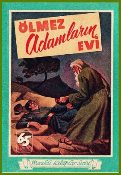

Sunuş
Kayıp Kitaplar Kütüphanesi “Ölmez Adamların Evi”
Fatih Danacı
Ülkemizde korku edebiyatının az sayıdaki örnekleri arasında gösterilen ve ilk kez Güven Yayınevi tarafından 1955 yılında okuyucuya sunulan “Ölmez Adamların Evi” adlı romanın Hamdi Varoğlu tarafından yazıldığı bilinmekte, genel bir yanılgı ile Türk korku edebiyatı bibliyografyasında adı geçmektedir. Halbuki bahse konu olan kısa roman, Türk dostu Fransız yazar Claude Farrere’e aittir.
Özellikle telif haklarının çok önemsenmediği (hala günümüzde yeterince önemsendiği söylenemez) Cumhuriyet sonrası yayıncılığında yayınevleri çıkarmış olduğu kitaplarda tecimsel ya da başka sebeplerden dolayı kitap yazarlarına -hem yerli hem yabancı- gerekli önemi vermemiştir. Bazen yazarın adını kullanmayıp yerli isim tercih ederken, bazen de popüler yabancı yazarların adını kullanarak piyasaya Türk yazarlar tarafından yazılmış kitaplar sürmüşlerdir. Benzer durum –kasıtlı ya da kasıtsız olarak– “Ölmez Adamların Evi” adlı kitapta da mevcuttur.

Kitap 1955 yılında Güven Yayınevinin “Meraklı Kitaplar Serisi”nin yedincisi olarak ülkemizde satışa sunulmuştur. İlk sayfasında ise Nakleden olarak –ki 50’li yıllarda çeviren tabiri yerine nakleden de kullanılmaktaydı– Hamdi Varoğlu geçmektedir. Ancak romanın asıl adı “La Maison des hommes vivants” (Yaşayan İnsanların Evi), ilk basım tarihi ise 1911’dir. Farrere, özellikle Kurtuluş Mücadelesi’nde Türklere destek veren ve memleketi Fransa’da Türkleri öven yazılar yazan, aynı zamanda ülkemizde pek çok tarih çalışmaları yayınlanan, Atatürk tarafından sevilen ve takdir edilen, Atatürk’ü takdir eden bir yazardır. Bu özelliklerinden dolayı Sultanahmet’te ismi, Türkçe okunuşuyla “Klodfarer” olarak bir sokağa verilmiştir. Farrere, tarihi çalışmaların yanında tarihi romanlar da yazarken, fantastiğe yaklaşan kitaplar da yazmıştır. İşte dilimize çevrilen ve inceleme konumuzu oluşturan “Ölmez Adamların Evi” de bunlardan biridir.
İncelememiz esnasında kitabın Türkçe baskısı referans olarak kullanılmış olup, hikayenin detayları ve özellikle sonu bahsedildiğinden kitabı okumayı düşününler için ufak bir uyarı yapmayı uygun görmekteyiz. Anlatılan hikaye, öleceğini söyleyen ve akıl almaz olaylar yaşadığını dile getiren Fransız Yüzbaşısı Andre Narcy adlı ana karakterin ağzından aktarılır. Korku öykülerinde sıklıkla kullanılan birinci tekil şahıs anlatımı kullanılırken, ana karakterin bir görev için yaptığı yolculukta yaşadığı sıra dışı macera 36 bölümde anlatılır. Tüm bu süreçte şahit olduğu olayların ibret alınması gerektiğini, bir gün sonra öleceğini ve ölme sebeplerini sıklıkla vurgular.
Hikaye, 1909 yılında, Fransa’da Toulon civarındaki dağlarda yaptığı yolculukta metresi Madeleine ile tesadüf eseri karşılaşması ve onu takip etmesi ile başlar. Aşk ve sevgi hikâyesini andıran başlangıcı, kısa süre sonra korku ve gizem unsurları ile çevrelenir. Bir anlığına görüp kaybettiği metresini arayışı esnasında kendisi de dağlık arazide kaybolur ve uyuduğu bir anda ihtiyar bir adam tarafından el feneri ile uyandırılır. Daha sonra ihtiyar adamın evine gider ve yaşlı adama benzeyen iki kişi daha görür. Böylece kitabın adını oluşturan adamların evine gitmiş olur. Üç ihtiyar ise aslında dede, oğul ve torununda başkası değildir.
İhtiyarlar, evin içinde gelişen olayların neticesinde uzun yaşamlarının sırrını anlatmak zorunda kalırlar. Uzun –hatta sonsuz– yaşamlarının sebebi büyü ya da sihir değil, tıbbi müdahalelerdir. Yaşlı hücrelerin yenilenmemesinden yola çıkarak, genç vücutların ölü hücreleri yenilemesi sonucuna ulaşır, böylece hayatta kalmak için genç vücutlara ihtiyaç duyarlar. Yani tıpkı bir vampirin kurbanlarına yaptığı gibi, gençleri, onların kanlarını kullanırlar. Zaten Yüzbaşı, bu durumu öğrendiğinde “kan emici adam” tabirini kullanır. Böylece konu salt vampir öyküsü olmasa da, yazarın bu ve benzeri vampir benzetmeleriyle tema, ölümsüzlükten vampirliğe doğru bir sapma yapar ki, yazarın seçtiği cümleler bunu açıkça göstermektedir.
Zaman zaman tarihi anlatımlarla beraber, son bölümlerinde hafiye romanlarındaki detay olgusuna önem veren ve çoğunlukla fantastik bir korku öyküsü olan kitap, aynı zamanda dönemine göre öncü olan tıbbi müdahalelerden başka bilimkurgu öğeleri de barındırmaktadır (klonlanma ve ışınlanma gibi) . Kitapta ölümsüzlüğün kaynağı olarak kendilerinden önceki kimya ve simya uzmanı olan bir kişi gösterilir, o ve yaptıkları övülürken, tıp adamları da yerilir. Hatta ölümsüzlük olgusunu üstatlarından da önceye, çok eskilere dayandırır. Yani öykü pek çok türün sentezi olarak gösterilebilir. (Bu hükme kati olarak varmadan önce kitabın orijinal basımının okunması gereklidir.)
Neticede genç kalmak için genç kadın ve erkeklerin kanlarına ihtiyaç duyarlar, tam olarak ifade edilmese de onların kanlarını kendilerine neşrederler. Ancak üç kardeş ölmez olmanın vermiş olduğu güce rağmen (hatta hipnoz güçleri vardır, kurbanlarını bu yolla çağırır, hafızalarını silerler) insancıldırlar, insanları öldürmezler. Varlıklarını gizlemek ve ölümsüz olmalarını sağlayan sırlarını idame ettirmek için dağlarda yaşarlar, düzenli olarak yer değiştirirler.
Ana karakter olan Yüzbaşı altı saat geçirdiği ölmez adamların evinde, onların sırlarını öğrenir, bu esnada sevgilisi Madeleine’i görür. Tüm sırlarını öğrenmişken de, serbest kalması imkansızdır, ancak ölmez adamlar tarafından öldürülemez de. Bu sebeple hipnoz ve tam olarak ifade edilmeyen bir yolla Yüzbaşı’nın kopyası yaratılır ve dağlara gönderilerek, Yüzbaşı’nın kaybolduğu yoldaki uçurumdan aşağı düşmesi sağlanır. Cesedi bulunur ve cenaze merasimi gerçekleşir, toprağa gömülür. Bu esnada gerçek Yüzbaşı da yaşlanır. Kendi mezarı üzerinde yatarak ikinci ölümünü, yani kitabın başında bahsettiği ölümü bekler.
Yazar, pek çok türe değindiği gibi, klasik korku parametrelerini kullanmayı da ihmal etmemiştir. Gizemli yabancılar, tekinsiz evler, ölüm ve ölümsüzlük öğelerini kullanırken, kurduğu karmaşık türleri barındıran hikâyesi içine aşkı da ekler –ancak bahsedilen aşk evlilik dışı yaşanan, kaçamak bir aşktır–.
Kitap döneminin ilerisinde olan, özellikle barındırdığı bilimkurgusal temelleri ile önemli bir çalışmadır. Bundan ziyade kitabı, “Le Fantome de l’Opera”nın (Operadaki Hayalet) yazarı Gaston Leroux’a ait vampir örnekleriü “La Poupee Sanglante” (Kanlı Bebek, 1923) ve “La Machine a Assassiner” (Cinayet Makinesi, 1923) de olduğu gibi, bir vampir eseri olarak da değerlendirmek mümkündür. İlginçtir ki, fantastik ve korku edebiyatı geçmişi pek de köklü olmayan Türkiye’de Ali Rıza Seyfi’nin “Kazıklı Voyvoda”sı (İlk basım 1928) ile Kerime Nadir’in “Dehşet Gecesi” (1958) adlı eserinin yazıldığı zaman aralığında bizim üretimimiz olmayan ancak vampir öğeleri barındıran çeviriler bulmak mümkündür. Mayk Hammer serilerinde psikopat, akıl hastası ve şizofren vampirleri anlatan örneklerden başka, ölümsüzlük yolunda vampirce eylemlere yer veren, konusu itibariyle ilginç bir çalışma olan “Ölmez Adamların Evi” de bunlardan bir tanesidir.
KAYNAKÇA :
Ölmez Adamların Evi, Claude Farrere, Güven Yayınevi, Türkiye, 1955
Science-Fiction The Early Years, Everett F.Bleiler, USA, 1990
http://fr.wikipedia.org
Ölmez Adamların Evi
1909 yılı ocak ayının yirminci günü olan bugün, korku ve hayret içinde, macerayı baştan aşağı yazmağa karar verdim. Karar verdim, çünkü yarın değil, öbür gün ölmüş bulunacağım, öbür gün, evet öbür gün, muhakkak surette öleceğim, ihtiyarlıktan öleceğim. Bunu hissediyorum ve biliyorum. Demek oluyor ki sükûta nihayet vermekle büyük bir zarara girecek değilim. Esasen, hakikatin farkında olmayan ve tehlikede olduklarını bilmeyen kadın, erkek bütün insanların istirahati, sükûtu ve emniyeti namına, bu sükûta bir nihayet vermek isabet olacak sanırım. Benim için artık mesele yok. Öbür gün ölmüş olacağım.
Binaenaleyh edeceğim sırrın ifşasını, biraderlerim ve hemşirelerim mesabesinde olan bütün erkeklere ve bütün kadınlara vasiyet ediyorum.
İhtiyarlığım ve ölümüm onlara bir ibret dersi olsun.
Son arzum budur.
***
Evvelâ şunu söyleyeyim: Deli değilim. Aklım tamamıyla yerinde. Hiç bir hastalıkla da malûl olmadığım için sıhhatim de tamam. Yalnız ihtiyarım. Her türlü beşerî ihtiyarlıkların fevkinde ihtiyarım. Yaşım seksen mi? Yüz mü? Yüz yirmi mi? Hiç bilmiyorum. Bu yaşı tayin hususunda hiç bir vasıtaya da malik değilim. Ne nüfus cüzdanı yahut hüviyet varakasına benzer yazılı bir vesika, ne bir hatıra, ne bir şahit. Hatta yaşımı, ihtiyarlık hislerimle bile ölçerek tayin edemiyorum. Zira ihtiyar olalı ancak bir kaç gün oldu. Bu ani değişikliğe alışacak kadar zaman geçmedi. Bu asırlık ihtiyar halini alıncaya kadar daha az ihtiyarlık safhaları geçirmediğim için yaş farkları arasında bir mukayese de yapamıyorum…Şimdi bulunduğum hale birdenbire düştüm.
Çok üşüyorum. Bilhassa vücudumun içi üşüyor. Etlerimin içi, kanım, iliklerim üşüyor. Yorgunum, müthiş surette ve hiç bir istirahatin gideremediği, gideremiyeceği şekilde yorgunum. Vücudumun bütün âzası uyuşuk, mafsallarım sancıyor. Dişlerim mütemadiyen birbirine çarpıyor ve o kadar sallanıyor ki, lokma çiğnemeğe imkân yok. Belim, mukavemet edilmez bir şekilde yere doğru eğiliyor ve bükülüyor; gözlerim bulanık görüyor; kulaklarım ağır işitiyor. Bütün bu ıstıraplar bana çok acı ve ağır geliyor; yeni oldukları için…
Öyle bir haldeyim ki, hiç bir mahlûk benim kadar sefil ve bîçare değildir zannederim…
Fakat bütün bu azablar nihayet iki gün daha devam edecek! Topu topu kırk sekiz saat. İki bin sekiz yüz seksen dakika; bir şey değil!
Bu kısacık müddeti şimdi hesap ettim ve kalbim ümidle çarpmağa başladı… Evet ümidle çarptı. Gerçi ölüm çok korkunç bir şey -bunun ne kadar korkunç bir şey olduğunu hayatta bulunan insanlar katiyyen tahmin ve tasavvur edemezler; onu ben, yalnız ben bilirim- fakat ne ehemmiyeti var! Artık hayatım, hayat denilecek şekilden çıktı…
Hayır, deli değilim. Aklıma tamamile sahib bulunuyorum ve üstelik de öleceğim. Bunlar öyle iki sebep ki yalan söylemediğimi isbata ve sözlerimin doğruluğundan şüphe edilmemesine kifayet eder.
Siz ki bu yazılan yazdığım şu defteri bulacak ve maceramı okuyup öğreneceksiniz, eğer Allahın varlığına inanıyorsanız, o inandığınız Allah aşkına olsun sözlerimin doğruluğundan şüphe etmeyiniz. Anlattıklarım masal yahut hezeyan değildir. Bizzat sizin başınıza, oğlunuzun kızınızın başına, karınızın veya metresinizin başına gelmesi ihtimali olan felâketlerin en müthişinden bahsedeceğim. Sözlerimi hakir görüp omuz silkmeyin; deli değilim. Ölüm, sizin de başınızın ucunda bekliyor. Gülmeyin. Okuyun, anlayın, inanın ve sonra ne yapmak lâzım geliyorsa onu yapın.
İhtiyarlıktan titriyen elimin kusuruna bakmayın ve okunmayacak derecede kötü olan yazımdan usanıp bir tarafa atmayın. Bu kurşun kalemini sokağın tozları arasında buldum. Eskimiş ve çok kısalmış olduğu için parmaklarım onu tutmakta zorluk çekiyor.
Bu defter de pek iyi bir şey değil. Sahifelerin kenarlarında enli, siyah bir çizgi var. Bu yüzden satırları sıklaştırmağa mecbur oluyorum. Başka bir kâğıdım yok. Maamafih başka bir kâğıda yazmaktansa, bu siyah kenarlı deftere yazmak belki daha doğru…
Yazıyorum. Allah aşkma olsun şüphe etmeyin. Okuyun, anlayın ve inanın…
Macera, topçu kumandanı miralay Terriesse’den, Toulon valisi Vis Amiral de Fierce’e gelen bir mektupla başladı. Bu mektup erkânıharbiye dairesine akşam postasile gelmişti. 21 Aralık 1908 pazartesi günü idi… Evet geçen Aralığın 21 inci günü… Henüz bundan yirmi dokuz gün evvel… Yarın günü gününe tam bir ay olacak; bir ay… Topu topu bir ay… Aman Allahım!…
Mektup geldiği zaman ben zabitan odasında idim. O tarihte, askeri hükümete ait mektupları açmak vazifesi bana verilmiş olduğu için, bu mektubu da ben açtım. Ve gene o tarihte süvari erkânıharp yüzbaşısı idim, gençtim… Tam otuz üç yaşında idim…
Bundan bir ay evvel, ancak bir ay evvel…
Mektubu okudum. İçinde, nazarı dikkatimi celbedecek ehemmiyetli bir nokta görmedim. Şimdi bile mektup aynen gözümün önündedir.
Numara 287
Toulon mevkii müstahkemi 15 inci kolordu
Toulon 21 Aralık 1908
Miralay Terriesse’den Bahriye kumandanı ve Toulon valisi
Vis Amiral de Fierce’e
19 Aralık tarihinde 171, 172, 173, 174 ve 175 numaralı telgraf direklerinin, bir toprak çöküntüsü neticesinde kırıldığını ve binnetice. Tourris ile Grand Cap arasındaki hattın muattal kaldığını arzederim. Bu hattın tamiri hususunda lâzım gelen emirler verilmişse de yolların bozukluğu ve iki nokta arasındaki mesafenin fazlalığı hesabile tamiratın kırk sekiz saatten evvel ikmal edilemiyeceği muhakkaktır. O zamana kadar Grand Cap ile Toulon arasında telgraf muhaberatının bilmecburiye münkati bulunacağı maruzdur.
Miralay: Terriesse
Hazerde, Toulon ile Grand Cap arasında, muhabere namına hiç bir şey cereyan etmez, harp zamanı bittabi müstesna…
Grand Cap dağı Toulon şehrini ihata eden dağlardan biridir. Çıplak ve vahşî bir tepeden ibaret olan bu dağda oldukça asrî bir
bir istihkâm ve bu istihkâmda da bir tek nöbetçi nefer Vardır. Dağın etrafı arızalı, çorak arazi iie çevrilmiştir.
Bu mıntakada, nadiren görülen gelip geçici odunculardan başka, canlı mahlûk namına hiç bir şeye tesadüf edildiği vaki değildir. Mevzubahis telgraf hattının, kırk sekiz saat muattal kalması ile kıyamet kopmaz. Bu itibarla, miralayın mektubunu lüzumsuz evrak arasına tasnif etmek üzere idim ki, telgraf çavuşu, oda kapısını vurarak içeriye girdi :
—Yüzbaşım! Bahriye kumandanlığından sizi telefona çağırıyorlar.
—Geliyorum.
Yerimden kalkarken, şöminenin üzerindeki saate baktım. Tam üç idi. Çıktım ve koridoru geçerek zabitan odasına bitişik olan telefon odasına girdim. Ahizeyi kulağıma götürür götürmez, bizzat Amiralin, doğrudan doğruya benim ismimi çağıran sesinin işitince hayret ettim.
—Alo! Siz misiniz Narcy? diyordu.
—Evet, efendim benim!
—Baras, sizin Sollies Pont’da bir beygiriniz bulunduğunu söylüyor; doğru mu?
—Evet, efendim doğrudur. Hayvanlarımdan bir tanesi dün akşamdan beri oradadır.
—Yorgun falan değil ya?
—Hayır, efendim yorgun değil. Yarın o civarda keşif yapmağa çıkmak niyetinde olduğum için hayvanı o maksatla hazır bulunduruyordum.
—Pekâlâ… Fakat yarın keşfe çıkamıyacaksınız zannediyorum. Bu akşam can sıkıcı bir angarye var. Sizden başka yükliyecek kimseyi bulamıyorum.
—Emredersiniz efendim.
—Haberiniz vardır tabiî. Toulon ile Grand Cap arasında telgraf konuşmaları kesildi.
—Evet, efendim şimdi topçu kumandanlığının yazdığı mektubu okudum.
—Bu hâdise pek biçimsiz bir zamanda geldi çattı. Yarın yapılacak atış talimleri hakkında Grand Cap topçu muhafızlarına mutlak ve mutlak bu akşam malûmat vermek lâzım.
—Yarın mı dediniz efendim?
—Evet, yarın öğleüstü yapılacak atış talimleri hakkında! Talimleri tehire imkân yok. Çünkü General Felt yarın akşam Toulon’dan hareket edecek. Dağdaki oduncuların muhakkak surette vaziyetten haberdar edilmeleri lâzımdır. Bir kazaya meydan vermiyelim. Saat kaçtır şimdi?
—Üçü beş geçiyor efendim.
—Buradan Sollies ne kadar çeker?
—On yedi, on sekiz kilometre kadar.
—Emirberinize telefonla haber veriniz… Emirberiniz oralıdır değil mi?
—Evet efendim.
—Kendisine telefon ediniz. Hayvanınızı hazırlasın, sizi yolda herhangi bir noktada beklesin. Resmî elbiseniz arkanızda mı?
—Hayır efendim. Erkânıharbiye reisi öğleden sonra sivil elbise giymemize müsaade ediyor. Fakat mahmuzlarım ayağımda olduğa için böylece binebilirim.
—Mükemmel. Şimdi size otomobilimi gönderiyorum. Derhal biner, Sollies’e gidersiniz. Üç buçukta oradasınız. Otomobil daha ileri gidemez zannederim, değil mi?
—Grand Cap istikametinde mi? Hayır efendim, gidemez. Sollies’den sonra yol ancak ufak arabaların geçmesine müsaittir.
— Bu yolu iyi bilir misiniz?
— Oldukça bilirim. Geçen sene manevralarda öğrenmiştim. Valaury’den sonra kötü bir patika vardır, o kadar.
— Oradan hayvanla geçebilecek misiniz?
— Geçen sene hayvanla geçmiştim efendim.
— O halde gidiniz. Sollies’den Grand Cap en aşağı bir buçuk saat sürer. Hâlbuki saat beşte ortalık zifiri karanlık oluyor, malûm ya…
— Geceyi Grand Cap da geçirecek değil miyim efendim?
— Tabiî! İstihkâmda, zabitler için odalar var. Muhafız istirahatinizi temin eder. Yarın sabah döner, gelirsiniz. Epey yorucu bir angarya ama ne yapalım. Herhalde muhafızı haberdar etmek mecburiyeti var.
Araba gönderelim dedik, harita üzerinde ölçtük, araba yalnız gidiş için otuz kilometre yol gitmek mecburiyetinde… Otomobil hiç gidemez, yola daha yeni taş döşendi. Biricik hal çaresi araziyi tanıyan ve Sollies’den hareket edebilecek bir süvari, yâni siz…
— Evet, efendim bendeniz. Zannederim otomobil geliyor, sokakta gürültüsünü işittim.
— Emir erinize telefon edin ve yola çıkın.
—Telgraf çavuşu tarafımdan telefon edecek efendim. Bendeniz gidiyorum.
— Allah selâmet versin azizim. Yarın görüşürüz.
Mikrofonu yerine taktım. Telgraf çavuşu alelâcele pelerinimi ve şapkamı verdi.
Dışarıda ince bir yağmur çiseliyordu.
Gizli gözleri kilitlemek için odama girdim. Kilitlerden birisi beni epeyce uğraşırdı; birkaç dakika kaybettim. Kapalı pencerelerin arkasından donuk, fakat bol bir ışık görüyordu. Harıl harıl yanan küçük sobanın kırmızı ve sıcak aydınlığı da buna katılınca, dışarının rutubetini gayriihtiyarî gözümün önüne getirdim ve kalem odası bana çok cazip göründü.
Topçu kumandanının mektubu masamın üstünde kalmıştı. Çekmeceleri ve dolapları kilitlemiş olduğum için, bunları tekrar açarak vakit geçirmek istemedim ve mektubu ceketimin iç cebine yerleştirdim…
Avluda generalin hayvanlarını, bir seyis, kaşağılamakla meşguldü. Beni görünce ağzındaki sigarayı fırlattı ve selâm verdi. Zemin esmer bir renk almış, orası burası yağmurdan, gölcüklerle dolmuştu. Pırıl pırıl ağaçlardan yağmur damlaları dökülüyordu. Kapıyı açarken çıngırağın sesi, uyuyan muhafız köpeğini uyandırdı.
Eşiği atladım. Kendimi, homurdana homurdana kaldırımın kenarında bekliyen otomobilin içinde buldum.
Revel sokağı ile Liberte meydanının köşesini dönerken, az kalsın, kaldırımın üzerinde oynıyan bir çocuğu çiğniyorduk.
Strasbourg bulvarında, bir araba yığını yüzünden ağır ağır ilerlemeğe mecbur olduk. Biraz ileride önümüze çıkan bir yük arabası yine yolumuza mâni oldu.
Bundan sonra birbirine yaslanmış evleriyle bitip tükenmek bilmiyen Saint Jean mahallesini geçtik. Her kilometre başında karşımıza bir tramvay çıkıyordu. Şimendifer köprüsünün altından geçerken birdenbire karşılaştığımız ameleler, şoföre küfrettiler. O aralık geçen bir trenin düdüğü amelelerin sesini bastırdı.
Yağmur dinmişti, fakat kaldırım hâlâ ıslaklığını muhafaza ediyordu. Damların üzerine bulanık renkli bir sema çökmüştü. En güzel havalarda bile aleladeden ibaret olan manzara, hiç bir güneş ışığının sızmadığı bu karanlık günde, insana büsbütün kasvet veriyordu.
Seyrekleşmeğe başlıyan son evleri de geçtik. Tarlaların ortasında dümdüz uzanıp giden çamurlu yola daldık.
Solumuzda yükselen Faron dağının tepesini görebilmek için otomobilin penceresinden dışarı uzandım. Tepe, bir bulut yığını ile örtülüydü. O zaman, daha yüksek olan Grand Cap tepesinin her halde daha fazla bulutlu olacağını düşündüm. Kim bilir o karmakarışık dağ yollarını tanımak ve bulmakta ne kadar zorluk çeke- çektim. Fakat bu düşünce bir an sürdü ve geçti. Otomobil şimdi Toulon-Nice yolu üzerinde ilk köy olan Valette’den geçiyordu. Geçtiğimiz sokaklarda bir sürü çocuk bağıra çağıra peşimizden koşuştu…
Saatime baktım, henüz üç buçuk olmamıştı. Her ihtimale karşt şoföre dedim ki:
— Şu yolları geçer geçmez sen sürati ver, anladın mı?
— Başüstüne yüzbaşım.
Otomobil artık hızını aldı ve dümdüz yolun üzerinde bütün süratiyle koşmağa başladı. Sağımızda, La Garde köyü ve köye hâkim olan şato harabesi görünüyordu. Şatonun manzarası bana, gayriihtiyarî, bir kadın çehresi hatırlattı. Hayatımda geniş bir yer işgal eden… Bir sene evvel ilk defa olarak bu harabede tesadüf ettiğim bir kadın… Şimdi yalnız bu tesadüfü ve bu çehreyi düşünüyorum. Şatonun yıkık duvarları, sisli sema üzerine keskin hatlarla çizilmişti. Duvarların dibinden itibaren ileriye doğru, seyrek ağaçların süslediği çıplak, çirkin bir ova… Gezerek geçtiğim şatonun meydanı ve kulelerden birinin arkasında karşıma çıkan nefis endamlı kadın şimdi gözümün önüne geliyor. Şatonun merdivenine oturmuş, yorgunluk dinlendiren meçhul bir kadın… Ayak sesimi işitince başını çevirmişti. O zaman, altın renginde sarı bir saç ve zümrüt gibi iki göz, beni altüst etti.
… Madeleine de… Madeleine…
Az daha soyadını da yazıyordum. Bütün bu vak’alar bugün benim için ne kadar uzak… Ne kadar korkunç bir surette uzak… Fakat yalnız benim için! Şimdi, buraya, benim metresim olan bir kadının, henüz hayatta bulunan ve benim gibi ihtiyar olmıyan bir kadının ismini yazmama imkân yok. Hattâ şu dört hecelik küçük ismini bile yazmak fazla idi. Bereket versin ki Madeleine küçük isim olarak çoktur. Onun isminin Madeleine olduğunu bilenler, saçlarının altın sarısı renginde, gözlerinin zümrüt gibi yeşil olduğunu bilenler bile bunun, o olduğunu anlıyamazlar.
Yoluna devam eden otomobil, ben farkına varmadan Falede köyünden geçmiş! Şimdi, ileride, Sollies’in ilk evleri bize yaklaşıyordu…
Sollies’e vardığımız vakit saat tam dörde yirmi vardı. Yol üzerinde ve tam Grand Cap dağına gidilecek noktada, emir neferim, hayvanımın dizginleri elinde, bekliyordu. Şoför o kadar ânî durdu ki, oturduğum yerden yuvarlanmama kıl kaldı.
Bir dakika sonra eğerin üzerindeydim. Kapı eşiklerinde oturan mahalle kadınları merakla beni seyrediyorlardı. İçlerinden biri, köylü lisaniyle:
— Hava güneşli olsaydı, zabit efendi beygirde daha güzel görünürdü, dedi.
Zannederim bu söz, o gün işittiğim son cümle oldu. O gün… Yâni son günüm…
Aiguiers yolunu tuttum. Yol rahattı, ne fazla kaygan, ne fazla sert. Beygirim güzel bir tırısla gidiyordu.
Bu hayvanı pek severdim. Çok cesur ve uslu, hâlis kan arap atı olan bu beygiri, iki sene evvel, nazırın maiyetinde bulunduğum zaman almıştım. Böyle vazifelerde, kıta zabitlerinin bilmediği birçok kolaylıklar vardır. Atımın ismi Siegfried idi. Uzun zaman beraber bulunduğumuz için birbirimizin huylarını iyi öğrenmiştik. Zikre değer hiç bir kusuru, hiç bir huysuzluğu olduğunu hatırlamıyorum.
Siegfried beni bir solukta Aiguiers’e kadar getirdi. Burası Mouras silsilesinin eteklerine sığınmış basit bir köydür. Bu köyü de geçtikten sonra yol biraz daha güçleşti. Şimdi tâ ilerideki nehrin zikzaklarını takip eden ve dağın eteğine sürünerek geçen, sert, ani dönümlerle dolu bir yoldan gidiyorduk. O esnada yağmur taneleri tekrar dökülmeğe başladı. Hayvanı biraz süratliye kaldırdım. Sağımda, bir kiraz bahçesi ve kiraz ağaçlarının üstünden bir kilise kulesi göründü; sonra patika haline gelen yol sola döndü ve artık ince ince ağlıyan bulanık bir sema ve bu semanın altında uzayıp giden boş araziden başka bir şey görünmez oldu.
Dik bir yokuşa geldik, sürati azaltmağa mecbur oldum. Ağır bir yürüyüşle, bir tümseği aştıktan sonra, yine dimdik bir yokuştan tekrar aşağı indik. O zaman Grand Cap dağını karşımda gördüm. O âne kadar Mouras silsilesinin arkasında kaldığı için görünmüyordu. Şimdi birdenbire meydana çıkmış ve etrafındaki tepelere hâkim azametli duruşiyle karşımda belirmişti. Tepeleri bulutlarla örtülüydü. Adeta bu koca bulut kümelerini başında taşıyan muazzam bir sütunu andırıyordu. Eteklerinde çorak araziye kadar inen sis parçaları sürünüyordu. Bu meçhul keçi yolunda, göz yordamiyle ilerlemenin pek güç, hattâ tehlikeli bir iş olacağını, ikinci defa olarak bir önsezi halinde düşündüm. Gerçi şimdilik ortalık henüz aydınlıktı ve önümde geniş ve düz bir saha vardı. Hayvanımı tekrar süratliye kaldırdım. Sevinçle koşmağa başladı…
Birçok defalar Madeleine ile beraber, kısa sabah gezintileri yapmıştık. Aramızdaki münasebetleri merak edenlerin tecessüsünden kurtulmak için gün doğmadan yola çıkar ve ciğerlerimizi ılık ve mis kokulu rüzgârla şişirerek çam ormanlar: arasında hayvanlarımızı dörtnala koştururduk. Bu noktada hâtıralarım birdenbire kesildi, zira tam bu esnada, ciğerlerime, çürümüş ot ve küflü toprak kokusiyle karışık ıslak ve soğuk akşam rüzgârı doluverdi. Bu garip kokuyu daha kuvvetle koklamak ve mahiyetini anlamak için eğerin üzerinde doğruldum. Aynı koku ve aynı hava yine genzime doldu. O anda bu hava, bizzat karşımdaki dağın nefesiymiş gibi tuhaf bir hisse kapıldım; pis, murdar, ölümsü bir nefes… Sırtım haşyetle ürperdi. Atım dörtnala koşmakta devam ediyordu.
Tekrar tırısa çevirdim. Yolumuz yine incelmeğe ve yükselmeğe başladı.
Bir tepeciğin üstünde, karmakarışık dizilmiş dört tane kulübeye rasgeldik. Yanlarından geçerken canlı mahlûkata tesadüf etmedim. Yalnız, bu kulübelerin birinden bir köpek çıktı ve beygirimin ayaklarını kokladı. Havlamadan çekildi gitti.
Biraz ileride yol, başka yollarla birleşiyordu. Hayvanı durdurdum ve erkâniharp haritasını çıkardım. Tam karşımda, Grand Cap yalçın kayalardan mürekkep muazzam bir kütle halinde ufku kapatıyordu. Etekleri, yarım fersahtan daha yakın bir mesafedeydi. Sağ tarafım kuzey, solum batıydı. Haritayı tetkik ettim, karışık ve müphem buldum. Mamafih bulunduğum noktayı ve hangisini tercih edeceğimden mütereddit kaldığım iki yolu harita üzerinde tanıdım. Bu yollardan ikisinin de, başka başka noktalardan geçerek, istihkâmda nihayet bulduğunu tahmin ediyordum. Nihayet soldaki yolu tercih ettim. Sağ taraftaki yola sapsaymışım herhalde macera ile karşılaşmıyacakmışım.
Tam ilerlemeğe başladığım sırada, dağın tepesindeki bulut yığınlarının arasında, gözle güç seçilebilecek derecede zayıf, pembe bir ışık görür gibi oldum. Batıya doğru yürüdüğümü söylemiştim. Bu ışık, olsa olsa, sis ve bulut kütleleri arasından güçlükle yol bulup süzülen bir gurup huzmesiydi. Neredeyse birdenbire gece bastıracaktı. Hemen eğerin üzerinde arkama dönerek, gecenin yaklaşıp yanaşmadığını anlamak üzere doğu tarafına baktım. Gideceğim yere varmak için daha bir hayli mesafe vardı. İçimi bir üzüntü kapladı. Zira karanlığın, zannettiğimden daha yakın bir noktaya kadar geldiğini görmüştüm.
Karanlık, doğudaki vâdilerden bir hamlede sıçramış; adımlarımı takip ederek bana yetişmiş; beni geçmiş, hattâ ilerideki tehlikeli dağ eteklerine benden evvel varmıştı. Yol yavaş yavaş siliniyor, belirsiz bir iz haline geliyor… Atımın ayakları ara sıra sürçmeğe başladı.
İşte o zaman, bana yüklenen vazifenin, çok serin ve çok yağmurlu bir gecede sefer etmek külfetinden daha fena akıbetler doğuracak mahiyette bir şey olduğunun farkına vardım.
Yolumu Mouras silsilesinin en kuzey tepesinde kaybettiğimi kuvvetle tahmin ediyorum.
Henüz tamamiyie gece olmamıştı; fakat ortalık tamamiyle aydınlık da değildi. Takip ettiğim yol kalın bir çalılık altında kaybolmuştu, etraftaki arazi de aynı çalılıkla örtülüydü. Beygirim, zaman zaman ayaklariyle zemini yoklıyarak, ihtiyatlı adımlarla ilerliyordu. Ben de kendimi onun içgüdüsüne bırakmıştım.
Nerenin yol, nerenin boş arazi olduğunu ayırdedecek vaziyette değildim. Tam silsilenin en kuzey tepesinde, yolun tekrar ikiye ayrıldığı ve bir tanesinin isminin garabeti kadar, şöhretiyle de tanınmış olan “Gauthier’in ölümü” boğazına doğru gittiğimi unutmuştum.
Ben farkına varmadan hayvanım bu yola sapmış.
O noktaya kadar, az çok yürümeğe elverişli olan yol büsbütün kötüleşti. Etrafta gecenin koyulukları arttı. Yol bozulmaya, zeminde çukurlar, taşlıklar peyda olmaya başladı. Çalıları örtüyor, çukurları kapatıyordu.
Hayvanım birçok defa sürçtü. Başımın üstündeki bulut yığınları gittikçe yoğunluk peyda ediyor; dağa yaklaştıkça bu yoğunluk hem artıyor, hem de yaklaşıyordu. Bir aralık yarı şeffaf bir pus için de kaldım ve bunun, pek yakında olduğu anlaşılan koyu sis taba-kasının müjdecisi olduğunu hissettim. Kendi kendime:
— Şimdi hapı yuttuk!
Diye söylendiğimi hatırlıyorum.
Oldukça dik bir yokuş olan patika, yolun bu noktasında birdenbire aşağı doğru inmeğe başladı. Hayret ettim. Haritada böyle bir şey yoktu. Haritayı bir daha tetkik etmek istedim. Fakat ortalık iyiden iyiye kararmış olduğu için yazıları okumak kabil olmadı, vazgeçtim. Esasen iniş pek kısa sürmüştü. Çalılarla örtülü bir nevi çukur yola girmiştik. Yol tekrar yukarı çıkmağa başladı! Artık deminki patikadan eser kalmamıştı. Yabani otlar hayvanın göğsüne kadar çıkıyor, dikenleri vücuduna batıyordu. Ellerimi bu dikenlerden güçlükle muhafaza edebiliyordum.
Zemini katiyen seçemiyorum. Beygirim, tehlikeli olduğunu sezdiği bu pis yolda körkörüne yürümek istemiyor, sinirleniyordu. Yüz metre kadar ilerledikten sonra tekrar bir iniş başladı, bu da bitince tekrar bir yokuş tırmandık.
Yanlış yola sapmış olduğumu işte o zaman anladım. Hiç şüphe yok, bir boğazdan geçiyorduk. Hâlbuki Grand Cap’a giden yolda, boğaz namına hiç bir şey olmadığını biliyordum. Buna emindim. Mamafih, ilerisini görebilmek ümidiyle, yüksekçe bir noktaya gelinceye kadar yola devam etmeğe karar verdim ve ilerledim. Filhakika, biraz sonra, ümit ettiğim gibi, bir tepeye geldik. Etrafı güzden geçirdim. Şimdi önümde, uzak dağların çevirdiği, geniş ve uzun bir ova serildi. Bu dağların şekli, sis tabakasiyle örtülü olmalarına rağmen, benim için mevki tâyinine fazlasiyle kâfi geldi. Yere yatmış muazzam bir köpeğe benziyen güneydeki şu kütlenin L’aran dağı olduğuna şüphe yoktu. Bir zırhlı başı gibi kesik olan doğu tarafındaki tepesi, ovanın ortasında, denizi yarıp ilerliyen bir geminin burnunu andıran Coudon dağını da tanıdım.
Evet, tam Gauthier in ölümü boğazındaydım. Derhal ve kabil olduğu kadar süratle geri dönerek, yolumu şaşırdığım noktaya avdet etmekten başka yapacak bir şey yoktu. Kabil olduğu kadar süratle… Zira gece karanlığı tamamiyle çökmeden o noktaya vâsıl otmuş bulunmalıydım.
Hayvan, burnunu gıcıklıyan, biraz evvelki dikenli yola tekrar saplanacağımızı hissedince tereddüt etti. Yerinde saymaması için bacaklarımı sıktım. Cesaretle ileri atıldı ve ilk inişten sonra tırısa kalktı…
Fakat tam ikinci yokuşu tırmanacağımız sırada, birdenbire eğerin, altımdan kaçtığını hissettim, akabinde hayvanla beraber yere yuvarlandık. Otların ve çalıların üstüne hızla düştüm. Bereket versin yer taşlık değildi. On saniye zarfında toparlandım, kalktım… Yalnız üstüm başım epey hırpalanmış, dikenler vücudumu berelemişti. Lâkin hayvan yerinde kımıldamıyordu. Ona doğru eğilip baktım. Sol arka ayağı bir kayanın yarığına girmiş ve o kadar fena bir şekilde saplanmıştı ki, kemik, cam gibi kıvrılıvermişti. Artık zavallı Siegfried için ne tırıs, ne de dörtnal bahis mevzuu değildi. Hattâ tehlikeli olduğunu evvelden sezdiği bu çorak araziden ebediyen ayrılamıyacaktı.
Biz süvariler; hayvanlarımızı, dostlarımızdan, metreslerimizden bile fazla severiz. Beygirimi bu halde görünce çocuk gibi ağlamamak için kendimi zor zapt ettim ve birdenbire rovelverimi çekerek, biçare hayvanın kulağına soktum; gözlerimi kapadım; tetiği çektim. Yaralı koca vücut, hafif bir titremeden sonra, otların üzerine ebediyen uzandı, kaldı.
Silâhımı cebime yerleştirdiği ve nereye gittiğimi bilmeden yürümeğe başladım. İkinci yokuşu tırmandım; tesadüf ettiğim ilk taşın üzerine çöktüm.
Ancak, aradan on beş dakika geçtikten sonra, vaziyetin fecaatini düşünmek aklıma geldi.
Çok tehlikeli bir mevkideydim. Bütün geçitlere uzak dağlık arazinin ortasında ve yaya kalmıştım. En yakın kulübe, hiç olmazsa bir fersah mesafedeydi. İstihkâma varmak için ise en aşağı iki fersah yol yürümek lâzımdı. Hâlbuki vazifem, içinde bulunduğum çaresizliğe, gecenin karanlığına ve bu çalılıklar arasında yol bulmanın imkânsızlığına rağmen, istihkâma vâsıl olmaktı.
Geçit olduğunu tahmin ettiğim noktada bir taşın üstüne oturmuş, hayvanımın boylu boyunca uzandığı yeri seyrediyordum. Nihayete kadar yürümek, her ne pahasına olursa olsun vazifemi ifa etmek mecburiyetinde olduğumdan, yoluma devam etmek için ayağa kalkmak üzereydim ki, benden yüz metre kadar ileride, bulanık semaya resmedilmiş, esmer bir şekil gözüme ilişti. Bu esmer şekil, bir insan şekliydi; bana doğru ilerliyen, süratle yürüyen bir kadın gölgesi… Hayret ve sevinç içinde yerimden fırladım. Bu saatte ve bu mevkide, herhangi canlı bir mahlûka tesadüf edeceğimi zerre kadar aklımdan geçirmemiştim. Güpegündüz bile, Gauthier’in ölümü boğazından ne bir köylü, bir oduncu ve ne de bir avcının geçtiği vâki değildir. Zira buralarda ne ekin bulunur, ne orman, ne de ev…
Bu zifir gibi karanlık, yağmurlu ve soğuk gecede, belki de haftalardan beri ilk defa olarak buradan geçen biricik kadın yolcuya benim tesadüf edişim cidden hayrete değer ve umulmaz bir talih eseriydi. Bu kadın herhalde, acele acele köyüne dönen civar halkından bir köylü kadın olsa gerekti. Dağ yollarını iyi bildiğine şüphe yoktu ve elbet bana, takip edeceğim yolu tarif ederdi.
Kadına doğru iki üç adım attım. Zaten benim önümden geçecekti. Fevkalâde süratle yürüyor, çalılıklar ve dikenler arasından hayrete değer bir kolaylıkla süzülüp gidiyordu.
Aramızda yirmi adım kadar bir mesafe kalmıştı ki, birdenbire hayretten donakaldım. Kadın, köylü değildi. Şimdi onu daha iyi görüyor, arkasındaki elbiseyi seçebiliyordum. Dağ başında tesadüf edilmesine imkân olmıyan bir esvap giymişti. Dradan yapılmış, kenarları ermin kaplı, gayet şık, son moda bir şehir tuvaleti! Elleri yine erminden büyük bir buva içinde saklıydı. Şapkasının tüyleri yağmurdan ıslanmış, bozulmuştu. Şemsiyesi yoktu. Arkasında manto da yoktu. Velhâsıl baştan aşağı gayritabiîlikle dolu bir kıyafet… Etrafımız bu kıyafeti mazur gösterecek bir manzara arz etmekten çok uzaktı. Ayni kasvetli çöl içinde, ayni sinsi yağmurun altındaydık.
Nefes almağa cesaret edemiyordum, âdeta korkmağa başlamıştım…
Kadın mütemadiyen ilerliyordu. Şimdi artık el ile tutulmaz, tabiatüstü bir gölge halinden çıkmış, maddileşmişti. İskarpinlerinin gıcırtısını, çalılara sürtünen eteklerinin çıkardığı sesi açık bir surette işitiyordum.
Kadın, bana sürtünerek geçti ve geçerken başını bile çevirmedi ve durmadı. Çehresini evvelâ karşıdan, sonra yandan, gayet yakın olarak gördüm ve tanıdım. Ağzımdan korku ile karışık bir feryat çıktı:
— Madeleine!
Evet, oydu, Madeleine, metresim…
Beni nasıl görmediyse, sesimi de işitmiyormuş gibi davrandı ve süratle uzaklaştı.
Madeleine de…
Hayır, buraya onun soyadını yazamam…
Onu ilk defa evvelki sene görmüştüm… Evet, evvelki sene… Zannedersem 1907 Mayısında… Şimdi pek emin değilim. O kadar korkunç surette uzak bir hâtıra ki… Zihnim, son yağ damlasına kadar yanıp tükenen bir mum ışığı gibi sallanıyor ve tıpkı onun gibi, zaman zaman, sönük bir alev kımıldanışiyle son ışıklarını vermeğe çalışıyor.
1907 Mayısında… İşte birdenbire, o titrek ışıklardan birinin aydınlığiyle seçebiliyorum. Harap şatonun avlusundayız… Ben, aheste aheste, yılankavi patikadan yukarı çıkmıştım. Vaktiyle şatonun kulesi iken şimdi şekilsiz bir yangından ibaret olan enkazın arkasında Madeleine’i gördüm. Oturuyordu. Arkasına baktı, beni gördü ve kızardı. Bu kızarışından, çok mahrem bir hülyasını bozduğumu anladım.
Ayaklarımızın altında kasvetli ova uzanıp gidiyor, ovadan sonra, ufuklara kadar deniz görünüyordu. Parlak, masmavi gök de güneş altında çirkinliğini kaybetmiş, âdeta güzelleşmişti. İnsanın kalbindeki heyecanı güçlükle zapt edebildiği parlak günlerden biriydi…
Madeleine’in altın sarısı saçlarını gördüğüm zaman, kalbim çarpmağa başladı. Yeşil gözlerinin bakışı bana çevrildiği zaman, göğsüm bu çırpıntıyı zapt edemez bir hale geldi. Bilâhare, aşkımızın hakikaten bu ilk tesadüf ânında doğduğunu öğrendim. Madeleine o anda bende hâsıl olan değişikliği görür görmez kendisinin de, esrarengiz, derin bir hisle sarsılmış olduğunu bana sonradan itiraf etmişti.
Aman yarabbi! Bu ne akıl almaz şey! Henüz iki sene bile olmadı. İki sene evvel seven ve sevilen, ben miydim? Şimdi ölmüş bir deri parçası altında birkaç parça kemikten ibaret olan ben!
Sonra mükellef bir villânın parkında bir gece eğlentisi olmuştu. Villâ, denize hâkim bir noktadaydı. Park yılankavi yollarla sahile kadar uzanıyordu. Bu yollar çam ağaçlarıyle doluydu. Her tarafa ölgün ışıklar saçan kâğıt fenerler asılmıştı. Madeleine’i ikinci defa olarak orada gördüm.
Arkasında, yuvarlak omuzlarının çıplaklığını meydanda bırakan, nefis vücudunu bir çiçek gibi süsleyen, ay renginde bir rob vardı.
Bu çıplak omuzlara baktıkça kendimde dayanılmaz bir arzu duyuyordum. Denizin dalgalarını gören bir balkonda karşı karşıya idik. Dalgaların gürültüsü bize kadar geliyordu. Uzaktan keman sesleri bu dalga gürültülerine karışıyordu.
Etrafımızda başka kadınlar, başka erkekler dolaşıyordu. Bulunduğumuz taraçaya bir çift geldi, sükûnumuzu bozdu, tekrar çekildi, gitti.
Şimdi Madeleine ve ben, balkonun korkuluğuna dayanmış, denize bakarak alçak sesle konuşuyor, asıl söylemek istediğimiz şeyleri bırakarak, havaî mevzulardan bahsediyorduk.
Bu konuşma uzun müddet sürdü. Ağaçlarda asılı fenerler birer birer söndü. Kırmızı bir ay, denizin içinden doğdu, yükseldi; ziyası uzun, parlak bir servi gibi denizin ortasına doğru yayıldı.
O zaman keman sesleri sustu. Herkes villâya avdet ediyordu.
Madeleine, üşüyen elini koluma değdirmek cesaretini gösterdi.
Etrafımızdaki gölgeler gittikçe koyulaşıyordu. Büyük bir heyecan içindeydim. İlk tesadüf ettiğim gün sevdiğim, büyük bir sevgiyle seyrettiğim ve biraz evvel sevişmeğe çok müsait gecenin karanlığı içinde şiddetli bir arzu ile istediğim bu kadını, şimdi âdeta kotlarımın arasında tutuyor ve saçlarının, vücudunun kokusunu duyuyordum.
Bunu şimdi hatırlamak çok, çok feci şey…
Çok canlı bir kadındı. Renginin kırmızılığı, damarlarında dolaştığı görünen sıcak kanının cevvaliyeti, mevzun bacaklarının uzunluğu ve adaleli vücudunun sağlamlığı, zarif güzelliğine hiç halel vermiyordu.
İlk kucaklaşmamız, bir güreş müsabakası gibi hâlâ hatırımdadır.
Onun mağlûp ve güzel vücudunu bir küçük çocuk vücudu gibi kollarımın arasında kaldırdığım zaman hissettiğim ağırlık da hâlâ hatırımda… O, vücudunun, benim kollarım için bi]e bu kadar ağır olduğunu görerek gülüyordu.
Bütün bunların ancak beni alâkadar edecek şeyler olduğunu biliyorum. Fakat yazdığım bu defter, bir hâtıra defteri değildir. Ve ben bu yazıların okunmasını istiyorum, çünkü bunlar her erkeğin ve her kadının öğrenmesi lâzım gelen bir sırrı taşıyor.
Binaenaleyh, belki de o sırla alâkası olmıyan tafsilâtı bir tarafa bırakıp yalnız ondan bahsetmek ve kısa kesmek daha muvafık olacaktır. Lâkin sözlerimin baştanbaşa doğru olduğuna inanılmasını isterim. O olduğunu iddia ettiğim adamın, hakikaten ben olduğumu ispat etmeliyim: 27 nisan 1876 da Lyon’da doğan ve 21 aralık 1908 de yahut 22 ocak 1909 da Toulon’da vefat eden süvari yüzbaşısı Andre Narcy nin, ben olduğumu ispat edecek hiç bir delile malik değilim. Bunu ispat edemediğim için ölüyorum. Şu halde yazdığım şeyleri okuyacak kimselerin sözlerime inanması için kabil olduğu kadar fazla tafsilât vermeliyim. Esasen biraz düşününce, bakıyorum ki her şey, her şey bu sırra bağlı…
İlk kucaklaştığımız gün, Madeleine’i kollarımın arasında kaldırdığım zaman vücudunun ağır olduğunu hissetmiştim. Daha sonraları, yine onu böyle kollarımda kaldırdığım vakit bana, daha hafiflemiş gibi geldi.
Madeleine de… ismini yazamam. Hattâ onun kadınlık şerefi için tehlikeli olacak derecede açık tafsilât vermeme de imkân yok. Şurada -yalnız şu noktada- bazı isimleri, bazı vak’aları, bazı tarihleri kasden yanlış ve yalan yazmak zaruretindeyim. Meselâ ekim yerine haziran, vapur yerine araba, şehir yerine köy yazmak gibi. Bundan bir şey çıkmaz. İhtiyatlı davranmak mecburiyetindeyim. Çünkü hâfızamı aydınlatan ışık, her dakika biraz daha azalıyor, titriyor ve sönüyor. Dakikalarca süren ıstıraplardan sonra tekrar canlanır gibi oluyor. Hafızamı ve aynı zamanda zekâmı aydınlatan ışık… Dikkat etmesem söylenmemesi lâzım gelen şeylerin hepsini ağzımdan kaçıracağım muhakkak…
* * *
Zengin kızı ve zengin karısıydı. Sert, haşin bir adam olan ihtiyar babası, yaz, kış Toulon civarındaki dağlardan birindeki harap bir şatoda yasıyordu Bu inziva köşesinde yapayalnız ömür geçirir, hiç dışarı çıkmaz, kimseyi de kabul etmezdi.
On, on beş sene evvel, bir aile faciası bu adamı karısından ayırmıştı. El’an Toulon daki ihtiyarlar bu vak’ayı anlatırlar. İfadelerine göre, bu ayrılık oldukça büyük bir rezalet neticesinde vukua gelmiş. Mevzu kıtlığında, akşam çaylarında bile muhavere zemini teşkil eden bu vak’ayı, ben bir defa bile dinlemediğim için tafsilâtına vâkıf değilim. Böyle çirkin dedikodulardan hoşlanmam. İhtiyarı, bilmem hangi resmi bir iş dolayısiyle görmüştüm. Kadına birçok yerlerde tesadüf eder dururdum. Fakat hiç bir zaman konuşmamız, ahbaplık derecesini bulmadı. Çok hafifmeşrep, henüz güzel denilebilir ve kendisini hâlâ genç zanneden bir kadındı… Mükellef bir villâsı, ayrıca büyük malikânesi vardı. Senenin üç ayını Toulon’da kızının yanında geçirir; geri kalan altı ay zarfında da kim bilir nerede, belki Pariste yaşardı.
Madeleine, kocacı tersaneden ayrılamadığı için bütün sene, Toulon’da oturur, yalnız fazla sıcak mevsimlerde, yarımadanın en ucuna çekilirdi. Orada kocasının bir evi vardı. Fakat şehirle bu evin bulunduğu mevki arasında gidip gelmek pek güç olduğu için kendisi eve hiç gelmezdi. Hâlbuki ben, vazifem iktizası, bütün bataryaları dolaşır ve istediğim zaman, istediğim mevkilere gidebilirdim. İşte bu sebeple, Madeleine ve ben, rahat rahat orman gezintileri yapabiliyorduk.
Madeleine’in intihap ettiği beygiri, çok sadık bir adam olan emirberime veriyor, kendim de başka bir beygire binerek geliyordum. Yol üstünde bir gümrük kulübesi vardı. Orada emirberim hayvandan iner, oturur, benim sigaraları içerek bizi beklerdi ve biz müsterih, gezmeğe çıkardık. Bu gezintilerimizde hiç bir tehlike ite karşılaştığımızı hatırlamıyorum.
Ağaçlık yerlerden çıkıp da önümüzde bir kumluğa tesadüf ettiğimiz zaman, derhal atlardan iner, güneşin ısıttığı yumuşak kumlarda otururduk. Madeleine kolunu sıvar, yumuşak kumun, yumuşak cilde temasını duymak ve bu iki yumuşaklığı mukayese etmek istercesine çıplak kolunu kumlara daldırırdı.
Evet, epeyce hesap ettim: Harap şatoda Madeleine’i ilk defa 1907 mayısında görmüştüm. İkinci defa gece eğlencesinde tesadüf ettiğim aynı senenin haziranıydı. Bundan bir müddet sonra, takriben on beş, yirmi gün sonra idi ki, onu ilk defa kollarımın arasına alabilmiştim.
Bu vücut, uzun boylu, mütenasip endamlı, sağlam bir kadın vücuduydu; ağırdı.
Aradan birkaç hafta geçti. Altı yahut sekiz hafta, âzami on hafta geçti. Eylül gelmişti. Yine bir sabah, bir orman gezintisinde idik, bermutad kumlara oturduk. O sabah yine Madeleine’i kollarımda kaldırmak arzusuna kapıldım. Metresim yanımda uzanmış, yorgunluk alıyordu. Memnun ve mütebessimdi. Ona doğru eğildim. Kollarımı beline doladım, yorgun olduğum için kendisini kaldıramayacağımı söyliyerek alay etti ve güldü.
Kendimi zorladım ve bütün kuvvetimi topladım. Muvaffak olacağımdan, doğrusu, ben de biraz şüpheliydim. Fakat hayretler içinde kaldım; Madeleine’i kuvvet sarf etmeden yerden kaldırıvermiştim.
O dakikada bu vücut bana gayet hafif, garip bir tarzda hafif göründü.
Ölmek üzere bulunan mum birdenbire kuvvetli bir ziya neşretti. Şu dakikada çok, çok açık bir surette hatırlıyorum.
Oturduğumuz kumsalı çerçeveliyen ağaçların, yer yer esmer gölgeli kabuklarla dolu kırmızı gövdeleri, bir mabedin sütunlarını andırırdı. Yüksek bir fıstık ağacı, başımızın üstünde, muazzam bir şemsiye gibi gölge saçıyordu. Oturduğumuz sarımtırak kumun üzerinde ağaçtan dökülen dikenler doluydu.
Madeleine ayağa kalktığı zaman, üzerine takılan dikenleri silkmek için bir an onu durdurdum. Civarımızda hiç gürültü yoktu. Yalnız, beygirlerin, yaprakları çiğnerken ağızlariyle yaptıkları hışırtı işitiliyordu ve bir de uzaktan gelen denizin şıpırtısı…
Hayvana atlarken Madeleine ayağını avucuma bastı. Dikkat ettim; vücudunun eskisine nisbetle daha hafif olduğunu tekrar ve pek kat’i bir surette hissettim. Atlarımız, çalılıklar arasında yol almağa başladığı zaman ona gayriihtiyarî şu suali sordum:
— Sevgilim, bugünlerde hasta oldun mu?
Hayretle cevap verdi:
— Ben mi?
—Evet, sen… Seni biraz halsiz gibi görüyorum da…
Hemen pudra kutusunu açtı ve kapağının içindeki aynaya baktı. Sonra kahkaha ile gülerek:
—Amma yaptınız! dedi. Ne münasebet? Yanaklarımın rengini görmüyor musunuz? Kıpkırmızı…
Filhakika, gezinti ve sonraki istirahat onun genç kanını şiddetle cevelân ettirmiş, yanakları mercan gibi kızarmıştı. Parmaklarının ucunu pudraya batırarak yüzüne sürdü ve bu parlaklığı gidermeğe çalıştı; ayni zamanda neşeli neşeli gülerek:
— İyi ki şu pudrayı aklıma getirdiniz, diyordu.
Hesap ediyordum. Geçen hafta zarfında metresim benim evime yalnız bir defa, öğleden sonra gelmişti. O günü takip eden altı günlük istirahat devresi, en büyük yorgunlukları bile dinlendirecek kadar uzun bir müddettir… Altı gün, evet; o sabah Toulon’daki son randevumuzdan sonra tam yedinci gündü.
—Sevgilim, salıdan beri ne yaptın? diye sordum.
—Salıdan beri mi?
—Vay, unuttun ha? Evet, salıdan beri…
—Hakkınız var, unutulacak mevzu değil! Salıdan beri hiç bir şey yapmadım. Yalnız perşembe günü şehre gittim.
—Bana haber vermeden, öyle mi, hain…
Eyerin üzerinde döndü, hayretle yüzüme baktı ve ayni zamanda suali bana sorar gibi:
—Size haber vermeden mi? dedi.
Sonra ileri doğru dalgın dalgın bakarak, kendi kendine konuşur gibi söylendi:
—Sahi, size haber vermemiştim.
Mahçup olmuş gibiydi. Evvelâ bu mahcubiyetle alay etmek istedim:
—Zâhir o gün daha cazip bir randevunuz vardı?
Elini iki defa alnında gezdirdi. Parmaklarının uçları, güneşin aksiyle, dört pembe ışık gibi pırıldıyordu.
—Randevu mu? Nasıl randevu?
Rüyada konuşur gibi söylüyordu. İkaz etmek için sesimi yükselttim:
—Ben de sana onu soruyorum.
—Ah pardon, dedi, dalmışım. Perşembe günü mü? Evet, şehre gitmiştim. Trenle Boliö‘ye gittim.
—Anneni görmeğe mi gittin? Annen şimdi orada mı?
—Annem mi? Yok canım! Annem şimdi Eks’de… Eylülde orada ne işi var?
—O halde Boliö‘de işin neydi?
—İşim ne miydi?
Birdenbire yine dalgınlaştı. Tereddütlü bir ifadeyle ve her kelimeyi telâffuz edebilmek için kuvvet sarf ederek:
—Çünkü… yapılacak işlerim vardı… Boliö‘ye gittim. Hatta… bakınız…
Dedi ve dizginleri elinden bırakarak kolunda asılı olan çantasının içini karıştırdı:
—Bakınız, bu da biletim, dedi.
Bileti elinden aldım. Üzerinde bir tek zımba yeri vardı:
—Nasıl oldu da bu bilet sende kaldı? İstasyonda memura vermedin mi?
Gözlerini açarak, hayretle yüzüme baktı:
— Bilmem… Demek, vermemişim… İstememişler demek…
Çatılan kaşlarının arasındaki çizgi, derin bir düşünceye daldığını
gösteriyordu. Birdenbire, düşüncesini söylemek ister gibi, şunu itiraf etti:
— Dinleyin! Saçma, âdeta utanıyorum, fakat söyliyeceğim… Salı günü Boliö‘ye niçin gittiğimi hiç bilmiyorum. Orada hiç bir işim yoktu, bir işim olduğunu hatırlamıyorum. Sonra orada ne yaptığımı da katiyen
hatırlamıyorum. Salı sabahı, gittim, çarşamba akşamı döndüm. Müthiş
surette yorgundum. İşte bildiğim bundan ibaret…
Şaşkın bir halde dizginleri çektim, beygirim olduğu yerde durdu:
—Nasıl bildiğin bundan ibaret, peki, kocan? Kırk sekiz saat kaybolacağını kocana söylediğin zaman sebebini izah etmeden mi? Çok kat’i bir sebep olmadıkça kocan, senin Marsilya’ya kadar bile gitmene müsaade etmediğini bana yirmi defa söylemedin mi?
Altı, yedi hafta içinde, bir yatakta uyuyabildiğimiz topu topu iki geceyi ele geçirinceye kadar neler çektiğimizi bildiğim için, bu sualim gayet tabiî idi.
Fakat o, sinirli sinirli hayvanları kamçıladı, beygirler tekrar yürümeğe başladılar.
—Evet, dedi, en garibi işte burası… Gitmeden evvel kocama izahat verdim. Fakat bu izahattan bir tek kelimesini bile şimdi ha- hatırlamıyorum.
—Evet ama avdet ettiğin zaman seyahatin hakkında senden bir malûmat istemiştir.
—Evet, istedi. Bakınız bunu mükemmelen hatırlıyorum. Aynen şöyle söyledi: «Memnun musun? İşler yolunda gitti mi?» Ben de: Evet, yolunda gitti, çok memnunum dedim. Fazla ısrar etmedi, sustu…
—Peki, seyahatin nasıl geçti?.. Boliö‘ye gidince ne yaptın? Trenden inince nereye gittin?
—Nereye mi? Şeye… Villâya gittim tabiî…
—Tabiî diyorsun ama, buna kendin de emin değilsin galiba!
—Yok, eminim… Fakat bu iş o kadar karanlık, o kadar muammalı ki… Hâfızamın ortasında büyük, karanlık bir çukur var. Sanki… Daha fenası… Bu çukura bakmak istediğim zaman şuramda ve şuurumda bir ağrı hissediyorum.
Parmağiyle şakağının üstünü ve iki başının arasını gösteriyordu.
Ve benim, kendisini tetkik ettiğimi, yüzünü ve gözlerini dikkatle muayeneden geçirdiğimi görünce, birdenbire; gözlerinden iri yaşlar dökülerek ağlamağa başladı.
O zaman her şeyi unuttum ve bu yaşları dudaklarımla silmeğe çalıştım. Çünkü onu seviyordum.
Sevmek… Bu kelimeyi buraya yazışım ne gülünç ve ne korkunç şey! Fakat bunu yazmak lâzım… Bütün erkeklerin ve bütün kadınların anlaması, inanması için yazmak lâzım…
***
Evet, onu seviyorum. Bir erkeğin, bir kadını, bir defa gündüz, bir defa da gece mutfakta görmekle, onu beğenmek ve beğendiğini de kendisine söylemekle, onu arzu etmek ve elde etmekle hemen sevmiş olması, gayet garip ve hakikate uzak görünebilir… Fakat sizler, bütün kadınlar ve bütün erkekler, hafızanızı yoklayın ve hatırlayın. Sizler de birbirinize ayni şekilde tesadüf ederek, birbirinizi arzu ederek, arıyarak elde etmediniz mi? İlk önce tabiîdir ki birbirinizi sevmiyordunuz. İçinizdeki arzu bir meraktan, bir tecessüsten ibaretti.
İlk kucaklaşmanızda, kendi kendinize «bu ilk ve sonuncudur» dediniz. Hakikaten de ekseriya sonuncu olmuştur. Hâlbuki bazan -iyi hatırlayın- hâtıralarınızın lezzeti kafanızda kalır. O geçici arzu bir bağlantı oluverir. Evvelâ «bir gececik» diye düşünürsünüz, sonra «birkaç gece» dersiniz, daha sonra «kaç gece istersem ve o kaç gece isterse» dersiniz. Daha sonra -hepiniz iyi düşünün- «kaç gece yaşarsak o kadar» kararını verirsiniz.
Biliyorum, fakat ne zararı var? Ömrü oldukça sevişmek istiyen Ruh daha çabuk bıkar ve usanır.
Bütün ömürlerince sevişeceklerini ümit edenler, altı ay sonra biribirini aldatır, birbirinden nefret eder, birbirini unutur.
Biliyorum, fakat ne zararı var? Ömrü oldukça sevişmek istiyenler bu arzularında samimî; bir tek vücut olarak yaşıyacaklarını ümit ederken de, bu ümitlerinde samimîdirler. Ve o zaman, sevdiklerinin yerine, kendileri ölmeyi de samimiyetle tercih ederler.
Bütün erkekler ve bütün kadınlar, hepiniz hatırlayınız… Anlayabilmek için…
Ve işte o gün, benim son günüm olan 21 Aralık 1908 akşamının alaca karanlığında, o garip isimli «Gothiyer’in ölümü» boğazındayım. Ağzımdan korku ile karışık bir feryat yükselmişti:
— Madeleine!
O idi. Madeleine, metresim. Evinden beş fersah uzakta, arkasında şehir kostümiyle, yağmurun altında ıslanarak, çalılıkların arasında koşa koşa giden, artık iyice kararan gecenin ortasında yapyalnız ve yaya olarak giden bu kadın Madeleine idi.
Sesimi nasıl işitmemiş gibi göründüyse, mevcudiyetimi de fark etmemişti ve bu çorak arazide süratle uzaklaşıyordu.
Yirmi saniye kadar, haşyetten taş gibi dondum kaldım. Kalbim durmuştu, sonra birdenbire delicesine çarpmağa başladı ve bir an içinde yerimden fırlayarak kaçan bu kadının peşinden koşmağa başladım.
İlerideki yokuştan aşağı iniyordu. Yerdeki çalılara ve dikenlere rağmen çok süratli gidiyordu. Karşısındaki istikamete, boğazı güneyden kuzeye doğru kat ederek gidiyor, Toulon’a arkasını çevirmiş bulunuyordu.
Kuzeye doğru karanlık pek fazlalaşıyordu. Açık renk bir leke gibi görünen eteği, otların arasında kayboldu. Şimdi lûtr caketinin üzerindeki ermin yakanın parlak beyazlığını görebiliyordum.
Koştum… Fakat ayaklarım dolaşıyordu. Çalıların tamamen örtemediği kayalıklar, derin delik deşiklerle ve biraz evvel hayvanımın bacağını kıran yarıklara benzer ârızalarla doluydu, iki defa da ben düştüm. Ayağa kalkarken beyaz ermin kürkün biraz daha uzaklaşmış olduğunu görüyordum.
Avazım çıktığı kadar tekrar bağırdım:
— Madeleine!
Yine işitmedi. Biraz evvel birinci tepenin üzerinde gördüğüm esrarengiz kadın şeklini, şimdi üçüncü tepenin üzerinde gördüm. Yalnız gök daha az bulanık olduğu için, şekil daha silik görünüyordu.
Mütemadiyen konuşuyordum, fakat mütemadiyen mesafe kaybediyordum.
Şekil yavaş yavaş üçüncü tepenin arkasına indi. Ben oraya yetiştiğim zaman önümdeki çölden, sağımdaki Mouras dağı eteklerinden ve solumdaki Grand Cap eteklerinden başka bir şey göremedim…
İnsandan eser yoktu…
Ve karanlıkta koşmağa başladım. Takip ettiğim kadına yetişmek, bu muazzam sırrı aydınlatmak için ümitsiz koşuyordum. Bütün ruhumla, kaçan kadının izi üzerinde idim… Kayalardan aşağı kendimi koyuverdim. Solumda bir ışık görür gibi oldum, o taraftaki kayalara tırmandım. Taştan taşa sekiyor, bazan kayıyor, dizlerimle, ellerimle yere çarpıyor, elbisemi ve yüzümü dikenlere sürterek yara bere içinde kalıyordum. Böylece uzun müddet koştum, koştum, koştum. Artık durduğum zaman ne kuvvetim, ne de nefesim kalmıştı. Olduğum yere bitap bir halde çöktüm. Neresi olduğunu bilmediğim çıplak toprak üzerine bir ceset gibi uzandım kaldım. Maddî ve mânevi kuvvet ve tahammülünün pek fazla ilerisine
kadar giden bir insanı nasıl birdenbire uyku bastırırsa öyle bir uyku, ânî, kat’i ve deliksiz bir uyku, yıldırım gibi üzerime çöktü.
Ne kadar uyumuştum bilmem.
Garip, fakat yabancısı olmadığım bir his, beni ânî olarak uykudan uyandırdı. Yanımda bir yabancı bulunduğunu ve bakışlarının bana müteveccih olduğunu hissetmiştim.
Yüzüm koluma yaslanmış, yan üstü yatıyordum ve binaenaleyh etrafımı görmüyordum. Fakat bu mevcudiyeti ve bakışların tesirini ayni zamanda hissetim ve enseme hakikî bir darbe vurulmuş gibi oldu. Ekseriya, uykuda iken, canlı bir mahlûkun yaklaştığını böylece hissettiğim olurdu, fakat hiçbir zaman bu kadar derin ve bu derece kuvvetli şekilde değil.
Üzerimde bu kadar kudretli bir darbe tesiri bırakan mahlûkun herhalde başka mahlûklara benzemiyen bir şey olduğuna hükmettim.
O tarihte, akıllara hayret verecek kadar uzak olan o tarihte, genç, cesur ve mert bir adam olan ben, birdenbire ayağa kalkarak mevcudiyetini anladığım mahlûkun karşısında dikileceğim yerde, olduğum yerden kımıldıyamadım ve yüzüm gene koluma yaslı, uyku taklidi yaparak etrafa kulak kabarttım.
Gözkapaklarımın arasından etrafımı tetkik ettim. Kolumun üstünden görebildiğim şey, bir kadem murabbaı genişliğinde toprak ve çalılıktan ibaret bir saha idi. Yavaş yavaş bu toprak ve çalılık, sarımtrak ve titrek bir ziya ile aydınlandı. Başımın üzerinde bir fener sallandığını anladım.
O vakit, henüz uykudan uyanıyormuşum gibi sıçrayarak ayağa kalktım.
Karşımda bir adam, ayakta duruyordu. İhtiyar, çok ihtiyar bir adam. Elindeki hırsız, fenerini ta gözlerimin içine doğru tutmasına rağmen, ilk bakışta, bu adamın, beyazlıktan parıldayan ve göğsüne doğru uzayan geniş ve uzun bir sakalı olduğunu görmüştüm.
Hâlbuki bana hitap eden sesi, tam manasile yaşlı bir adam sesi değil, derin ve çok ciddî bir sesti. Katiyyen titremiyordu; içinde hiçbir eksiklik eseri olmayan, tam bir erkek sesiydi. Bu hal ve bana hitap edişindeki kat’i tavır ve eda hayretimi mucip oldu.
—Efendi, burada ne arıyorsunuz?
Bu suali hiç beklemiyordum. Nasıl bir mevkide ve ne vaziyette bulunduğumu gören bu adamın bana şu tarzda muamele ediğini misafirperverliğe yakıştıramadım. Maamafih, karşımdakinin, en aşağı bir hesapta, benden iki misli fazla yaşlı olduğunu düşünerek kabil olduğu kadar nezaketle cevap verdim:
—Görüyorsunuz ya efendim. Yolumu şaşırdım, daha doğrusu kayboldum.
Hırsız fenerinin ziyası, hâlâ gözlerimin içine giriyordu. Maama fih, adamın, beni tetkik eden gözlerini, fevkalâde parlak, burgu katlar sivri ve delici bakışlı bir çift gözü mükemmelen görebiliyordum.
Ciddi ve kat’i sesile sualinde ısrar etti :
—Kayıp mı oldunuz? Bu civarda mı? Nereden geliyordunuz efendim? Nereye gidiyordunuz?..
Bu sorgu canımı sıktığı için, dağlı bir adamın ağzından bu kadar düzenli sözlerin nasıl olup da çıkabildiğini düşünmeğe vakit bulamadım ve bu garabete dikkat bile etmedim. Kısaca şu cevabı verdim:
—Sollies yoliyle Toulon’dan geliyorum. Grand Cap istihkâmına gidiyorum. Evvelâ Gothiyer’in ölümü boğazında yolumu şaşırdım. Beygirimin de bacağı kırıldı. Sonra kestirme dağ patikalarından gitmek istedim, büsbütün yolumu kaybettim.
Verdiğim bu izahat, beyaz sakallı adamı şöyle böyle tatmin etmiş göründü. Fenerini yüzümden çekerek bulunduğumuz mevkii aydınlattı.
O zaman, delice koşuşmalarımın beni dehşetli sarp bir kayalık ve taşlığa getirmiş olduğunu gördüm. Beni orada gören herhangi bir kimse hakikaten hayretlere düşerdi.
Bu karmakarışık yerde, benden başka bir kimsenin mevcudiyetine bizzat kendim de hayret ettiğim için ayni suali ben de ona nordum:
—Peki efendim ama siz burada ne arıyorsunuz?
Müphem bir işaretle, sol tarafımızdaki dik yokuşu gösterdi :
—Sizi tepeden gördüm… dedi. Sustu; ben de sustum.
Şimdi artık fenerin ziyası gözlerimi kamaştırmadığı için muhatabımı iyice görebiliyordum.
Cidden ihtiyar bir adamdı ve hiç şüphesiz fevkalâde ihtiyar bir adam. Sakalının kar gibi beyazlığına, cildinin parşömenliği, ellerinin zayıflığı ve yüzünün buruşukluğu inzimam ediyordu. Bununla beraber gayet sağlam ve dinç bir ihtiyardı, Endamı dimdik, başı yukarıda, dirsekleri ve dizkapakları çevikti. Uzun boylu, uzun bacaklı ve geniş omuzlu bir adamdı. Heyeti umumiyesinde kuvvet ve kudret ifade eden bir hal vardı. Üzerine dayandığı sopa, onun elinde bir silâh kıymeti alıyordu. Belki de seksenlik bir ihtiyar olan bu adamın karşısında, otuz iki yaşında bir asker olan ben, kendimi dermansız, cılız bir mahlûk yerinde gördüm.
İçgüdü ile elimi cebimdeki rovelverin geniş ve uzun kabzasına götürdüm. İçindeki sekiz fişekten yedisi duruyordu.
Birisi, biraz evvel atım Siegfried’i öldürmüştü. Bir saniye sonra, elimi silâha sevk eden budalaca ve manâsız korkudan kendi kendime utandım ve bu defa gayet nezaketli bir lisanla söze başladım:
—Size henüz teşekkür etmediğim için affınızı rica ederim efendim. Başlangıçta işe karışmanızdaki erkekçe sebebi anlıyamamıştım. Bana muavenet etmek maksadile bu ârızalı yokuşu inerek hayatınızı tehlikeye koydunuz. Lütfen teşekkürlerimi ve minnettarlık hislerimi kabul ediniz. Ben, Vali Visamiralin erkânıharbiyesinden Yüzbaşı Andre Narcy…
Bilmukabele kendi ismini söyliyeceğini tahmin ederek sustum. Fakat ihtiyar kendini tanıtmadı. Yalnız beni fevkalâde dikkatte dinliyordu, sözüme devam ettim :
—Grand Cap’ta bulunan batarya muhafızına götürülecek bir emri hâmil bulunuyorum. Bana tevdi edilen ve henüz ifasına muvaffak olamadığım bu vazifeyi yerine getirmeğe çalışırken yolumu kaybettim ve artık kuvvetten kesilerek buraya düştüm. Yorgunluktan uyuyakalmışım. Şimdi, lütufkârlığınızdan gene istifade etmek cüretini göstereceğim efendim. Bana doğru yolu tarif etmek lûtfunda bulunur musunuz? Grand Cap’a giden yolu…
Konuşurken bir yandan da muhatabımı tetkike devam ediyordum. Evvelâ arkasındaki elbiseye gözüm ilişti. Gerçi elbisesinde bir fevkalâdelik yoktu; hattâ dağ başında, böyle bir gecede, herhangi bir oduncunun, bir avcının yahut bir çobanın sırtında görülebilen neviden alelâde bir esvap giymişti. Ayağında kaba kunduralar, kalın dolaklar, kadife pantalon ve sırtında kadife caket vardı. Fakat tam cümleyi bitirdiğim sırada, adamın bu kıyafetile, konuştuğumuz lisanın şivesi arasındaki nisbetsizlik nazarı dikkatime çarptı. Âdeta sersemledim ve korktum. Adamın verdiği cevabı yarım yamalak işittim:
—Doğru yol mu dediniz? Fakat efendim, siz en iğri yola sapmışsınız!.
Kendimi zorlıyarak sordum:
—Ben şimdi nerede bulunuyorum? İstihkâma uzak mı?
—Çok uzak…
—Peki, buranın ismi nedir?
—Zannetmem ki buranın bir ismi olsun. Bu mevki sizin haritalarınızda da mevcut değildir.
—Nasıl olur efendim, yolumdan bu kadar açılmış olmama imkân yoktur! Ne de olsa Grand Cap dağı ile Gothiyer’in ölümü boğazı arasında bulunuyorum. Yani gideceğim yerden iki fersah uzaktayım demektir.
Adamın sopalı eli, yorgun ve alaycı bir hareketle kalktı, indi;
—İki fersah mı dediniz efendim? Farz edelim ki öyle olsun.
Böyle bir gecede o mesafeyi nasıl yürüyeceksiniz?
Sallanan fener etrafımdaki taşlıklara hafif ışığını serpiyordu.
Gayri ihtiyarı başımı salladım, sonra kendimi toplayarak:
—Herhalde gitmeliyim, dedim. Hâmil olduğum emir çok müstacel. Siz lütfen bana, istihkâma gidilecek yolu gösterin. Minnettarınız olurum.
Adam sopasını, yıkılmak üzere gibi duran kaya yığınına, sarp bir yokuşa doğru uzatarak :
—Yol buradan! dedi.
Tereddüt etmek istemedim. Beyaz sakallı adamı selâmlıyarak:
—Teşekkür ederim efendim.
Ve kemali cesaretle yokuşa ilk adımımı attım. Fakat adımımı atar atmaz, bu sarpı çıkmanın tamamen imkânsız olduğunu da gördüm.
Kafamı bir hiddet bürüdü, dişlerim arasından mırıldandım:
—Böyle bir gecede, bu kayaların üstünde, koşa koşa gidenleri de gördük!..
Bu sözleri dişlerimin arasından ve yalnız kendim işitebilecek kadar hafif söylemiştim. Bana on adım kadar uzakta bulunan ihtiyar adamın bunları işitmesine maddeten imkân yoktu. Bununla beraber, sırtımda ve ensemde, biraz evvel beni uykudan uyandıran darbeye benzer ikinci bir darbeyi, gayet sarih bir surette hissettim. Bu sert bakışlı adamın gözlerindeki o, çok garip ve çok ağır darbe! Adeta taarruzu beklercesine birdenbire arkama döndüm.
İhtiyar, yerinden kımıldamamıştı. Gözleri bana müteveccihti, fakat bu gözlerdeki ifade hiç de düşmanca değildi. Hattâ yüzünün çizgilerinde bir tebessüm eseri bile görür gibi oldum. Adam tekrar söze başladı. Sesinde gayet sakin, hattâ iyilikçi bir ifade vardı. Biraz evvel bana sual sorduğu zamanki kabalıktan şimdi eser kalmamıştı:
—Efendi, diyordu. Size bir nasihat vermek istiyordum. Fakat kabul etmiyeceğinizi düşünerek tereddüt ediyordum. Artık tereddüde lüzum kalmadı. Hayatınızı tehlikeye atmanıza göz yummayacağım. Yola devam etmekte ısrar gösterirseniz, bir saate kalmaz bu kayaların birinden yuvarlanıp kolunuzu, bacağınızı kırarsınız. Bir uçurumun dibine yuvarlanırsınız. İfasına memur olduğunuz vazifeyi gene yapmamış olacaksınız. Beni dinleyin; sabah olsun, sonra yola çıkarsınız. Sabahleyin hareket edersiniz, istihkâma tam vaktinde gidersiniz. Şimdi hareket ederseniz, vaktinde değil, geç bile gidemezsiniz.
Sonra daha ikna edici bir ifade ile devam etti:
—Gece vakti bu taşların üzerinde yürüyebilmek için benim gibi dağ adamı olmak lâzımdır, efendim.
O dakikada zihnim, gayriihtiyarî birkaç saat evvelki tesadüfe saplandı ve Madeleine’in, sesimi işitmeden, mevcudiyetimi hissetmeden koşa koşa dağlarda yol alan hayalini tekrar görmek için gözlerimi kapadım. Ve o anda üçüncü defa olarak ihtiyar adamın bana bakan gözlerindeki esrarengiz şuanın darbesini tam yüzümde duydum.
Korku ile gözlerimi açtım. İhtiyar hep bana bakıyordu. Dimağıma garip bir korku saplandı. Acaba bu adam zihnimden geçenleri okuyor ve ben, nasıl onun sesini işitiyorsam o da benim düşüncelerimin sadasını mı işitiyordu?
İhtiyar, birdenbire karar vermiş gibi:
—Evim burada yakındadır efendim, dedi. Şafak sökünceye kadar bende misafir olmayı kabul eder misiniz? Hava çok soğuk, neredeyse gece yarısı olacak.
Gözlerimi açtım, bu yakınlarda ev olur mu diye düşünüyordum. O hayretimi anlıyarak başını eğdi ve :
—Şurada yakında, dedi, buyurunuz gidelim.
Gayet tatlı bir sesle söylüyordu. Fakat bu söz benim üzerimde itaate mecbur olduğum bir emir tesiri bıraktı.
Ve itaat ettim.
Beyaz sakallı adam, taş yığınları ve karmakarışık çalılıklar arasından geniş adımlarla ilerliyor, elindeki sopa ile çalılıkları ayırarak yol açıyordu. Ben onun izi üzerinde yürüyor, kendisini güçlükle takip edebiliyor, nefes nefese kalıyordum.
O önde, ben arkada, çeyrek saat böylece gittik. Rehberim birdenbire bana dönerek :
—Aman dikkat edin! dedi.
Sopasının ucu ile bana, sağ tarafımızda, benim göremediğim bir maniayı, yahut bir tehlikeyi işaret ediyordu. İhtiyatla yaklaştım ve ürpererek durdum. Önümde bir uçurum vardı. Kenarları sık ve yüksek çalılarla o kadar örtülmüştü ki insan, orada bir uçurum bulunduğunun farkına bile varmadan, yuvarlanıp giderdi.
Yeri ayağımla yoklayarak uçurumun kenarını tayin edebildim ve otların, çalıların arasından aşağıyı görebildim. Uçurum, çok derin bir sel yatağıydı. Ortasında döşeli beyaz çakıl taşlarının iki tarafından yeşilimtrak bir su akıyordu. Uçurumun civarlarında, tutunabilecek tek bir çıkıntı yoktu. Bu noktada yanlış adım atan bir insanın, derhal uçurumun dibine, ta beyaz çakılların ve yeşil suyun ortasına kadar yuvarlanacağı muhakkaktı… İhtiyar adam soldan gitmemi söyleyerek tekrar yürümeğe başladı, ben de onu takip ettim.
Çorak arazi şimdi garip ve bilmediğim bir manzara almağa başlamıştı. Beygirimin, Gothiyer’in ölümü boğazında can verdiği inişli yokuşlu araziden artık eser kalmamıştı. Madeleine’e tesadüf ettiğim ve onu gözden kaybettiğim yerlerdeki kayalıklar da artık görünmüyordu. Hissedilmiyecek derecede hafif meyilli bir yaylâda idik. Her tarafımız hendesî şekillerle kesilmiş kayalıklarla çevrili, yer, kâmilen dikenli otlarla örtülü idi. Balta ile yontulmuş gibi görünen bu garip kaya parçaları, görünüşte gelişigüzel serpilmişti. Bunlar murabba1, müselles2, müstatil3 velhasıl her türlü hendesî4 şekilde kayalardı. Maamafih hiçbirisi, insan yapısı denecek derecede muntazam ve temiz yüzlü değildi. Ve gene hiçbirisi, bunların tabiat eseri olduğunu zannettirecek kadar da gayri muntazam değildi. Heyeti mecmuası, güpegündüz bile içinden çıkılması güç bir lâbirent teşkil ediyordu. Fakat ihtiyar, bu kaya serpintileri arasında, hiç tereddüt etmeden, gayet emin olarak yoluna devam edip gidiyordu.
1 Kare, 2 Üçgen, 3 Dikdörtgen, 4 Geometrik… zamangezgini notu…
Arazinin manzarası bir daha değişti; son kaya parçaları seyrekleşti; zeminin meyli arttı; çalı ve dikenler azaldı; yayla, çıplak bir ova haline geldi.
Siz ki bu defteri okuyacaksınız; nerede bulunduğunu, hangi yollardan gidildiğini bilmediğim, bugün, bulmaklığıma, hattâ ona benziyen başka evlerin arasında tanımaklığıma ihtimal bulunmayan bu sır evini, dağlarda, ovalarda ve çorak arazide arayıp bulmak zahmetine katlanırsınız ümidile bu kadar ince teferruatla tarif ediyorum.
O eve gayet tabiî ve gayet basit bir surette vâsıl olduk. Karşımızda, bu kesif gecenin karanlığı içinde, yüksek ve siyah, geceden daha siyah bir kütle belirdi: Vilâyet köşelerinde biribirine benziyen binlerce ve binlerce köşklerden herhangi birininki gibi hususî bir ormanı çerçeveliyen servi ağaçlarından bir çit, bu çitten evvel bir demir parmaklık vardı. Beyaz sakallı adam elini parmaklıktan içeri sokarak gizli bir sürmeyi çekti.
Kapı gıcırdıyarak açıldı. Yorgun ayaklarımın kalın, bakımsız bir çimenliğe bastığını hissettim. Başımın üstünde, biribirine dolaşmış çam ve meşe dalları gördüm.
Sonra sık ağaç gövdelerinin arkasından bir evin taş ve tuğladan cephesi göründü. Biribirine sarılmış dalların koyu gölgeleri, bu karanlığı o kadar artırıyordu ki, cephenin teferruatından hiçbirini seçemedim. Yalnız çıktığımız taş merdivenle bunun –basamaklarını saydım, sekiz basamaktı- damın sol köşesinde yüksek, çok yüksek bir şekil görebildim. Bunun bir kule olması ihtimalini düşündüm.
Belki evi tanırsınız… Sokak kapısı demir çivi kakmalıdır. Kapının tokmağı bir demirci çekici şeklindedir. Tokmağın vurduğu yer, uçları tahtaya gömülü bir demirci örsüdür. Tokmağı vuracağı sırada, birden bana döndü. Sert bakışlı gözleri, yüreğime endişe veren bir parlaklıkla yanıyordu. Fakat daima sakin ve kat’i ifadeli olan sesi ve daima seçme kelimelerle söylediği sözler, hissettiğim ürküntüyü, bir defa daha giderdi. Önsezime ve itimatsızlığıma bir kere daha mukavemete mecbur oldum.
İhtiyar adam:
—Kabil olduğu kadar az gürültü etmek lûtfunda bulunursanız, minnettar olurum efendim, diyordu. Şimdi bize kapıyı açacak olan pederim, istirahatine hürmet edilmesi icap eden bir ihtiyardır.
Örse vuran çekicin madenî sesi, kulaklarımda, ihtiyarın sözlerile karışık garip bir akis bıraktı; bu darbe bizzat bana vuruluyormuş gibi geldi ve bizzat kendi korkumun çıkardığı sesi işitiyorum zannettim.
Tokmak, üstüste iki defa daha vuruldu, sonra birincisi gibi tek bir defa daha…
Ve kapı açıldı.
Methal* vazifesi gören geniş bir odaya girdik. Yanan iki meşale burayı güç aydınlatıyordu. Odanın dört tarafının siyaha yakın koyu renkte ceviz yahut meşe kaplama ile örtülmüş olduğunu ve duvarlarında resimler bulunduğunu hayal meyal gördüm. Kaplamadan, gözle güç tefrik edilebilen eski tarzda alçak kapılar vardı. Odada, iki büyük silâh armasından başka süs namına bir şey yoktu. *Methal: Giriş yeri
Eşikten içeri girer girmez, sol eli hâlâ açtığı kapının sürgüsü üzerinde, karşımda, ayakta duran ihtiyar bir adam gördüm. Bu adam, beni buraya getiren ihtiyara o kadar aynile benziyordu ki, ikisinin ayrı ayrı adamlar olduğuna ve şimdi gördüğüm ihtiyarın, ötekinin bir aynaya akseden hayali olmadığına emin olmak için gayri ihtiyarî geriye döndüm.
Aynı uzun, geniş, kar gibi beyaz sakal, ayni sabit ve ciddî bakışlı gözler. Bu kadar fazla benzeyiş akıl alacak şey değildi. Fakat hakikaten başka başka iki adam olduklarını anladım. Baba ve oğul. Oğlu babasının önünde hürmetle iğildi. O dakikadan itibaren, baba ile oğlu biribirinden, ancak birinin diğerine karşı gösterdiği hürmet eseriyle ayırd edebildim. Zira ikisi de ayni şekilde çevik ve dinç olmakla beraber, ikisi de ayni derecede ihtiyar, asırlık görünüyorlardı.
Durdum ve ev sahibini yere kadar iğilerek*(eğilerek) selâmladım. Selâmıma nezaketle mukabele etti, fakat bir kelime söylemedi. Gözleri bütün bütün sabitliğile bana müteveccih, beni tetkik ediyordu. Nihayet bu gözler benden ayrıldı, oğluna çevrildi. İstifhamla ona baktığını gördüm… Oğlu babasına dedi ki:
—Efendim, bu zata, Taş labirentin methalinde tesadüf ettim. Yolunu kaybetmiş, yağmur altında kalmıştı. Buraya getirmeyi muvafık buldum.
Sanki uyuyan bir kimseyi rahatsız etmekten korkuyormuş gibi alçak bir sesle konuşuyordu. İzahatını, bana çok uzun görünen, bir sükût takip etti ve sonra babası oğluna cevap verdi:
—Zannederim iyi ettiniz, efendim.
O da oğlu gibi alçak sesle konuşuyordu.
Aralarındaki muhaverenin bu çok eski teşrifat kaidelerine uygunluğu hayretimi mucip oldu.
O zaman, oğluna, geçen asırdan da evvelki devre ait teşrifat usulleriyle hitap eden bu ihtiyar adamın kıyafetini tetkik etmek aklıma geldi, Arkasında, tıpkı oğlunun elbisesine benziyen, kadifeden, kaba bir elbise vardı. Yalnız ayaklarına, dolak yerine, yün çorap giymişti ve pantolonu kısa ve dizkapaklarından bağlıydı.
Bu esnada oğlu babasına benim hakkımda izahat vermekle meşguldü. Teferruattan hiçbirinin unutmadığına dikkat ettim.
—Efendi zabitmiş, diyordu. İsmi Yüzbaşı Mösyö Andre Narry. Kendisi Grand Cap İstihkâmına mühürlü bir emir götürmeğe memurmuş. Bu emir çok acele olduğu için kabil olduğu kadar süratle mahalline götürmek mecburiyetinde bulunuyor.
Bu sebeple kendisini bu akşam evimize misafir etmeyi düşündüm. Bu gece istirahat ettikten sonra yarın şafakla yola çıkar ve bu akşam yaptığı gibi yollarda beyhude vakit geçirmeden gideceği yere varabilir. Kendisi bu gece yolda bittabi canlı mahlûka tesadüf edemediği için yolunu soramamış ve gitmek istediği Grand Cap istikametinden bu derece uzaklara düşmüş.
Bulunduğu mahallin fazla hücra bir yer olduğunu mütemadiyen tekrar etmekteki ısrar nazarı dikkatimi celbetti. İhtiyarların yüzlerini gizlice tetkik ettim.
İkisinin de çehresinde bir değişiklik yoktu ve babanın oğluna cevap veren sesi gayet tabii idi. Bu cevabı harfi harfine biraz evvelkinin ayniydi:
—Zannederim ki iyi ettiniz, efendim.
Zihnimde bir teşekkür cümlesi aradım. Fakat ben daha cümleyi bulmadan, ev sahibi elile kaplamalardan birinin içine gömülü gizli bir kapıyı işaret ederek, oğluna hitaben:
—O halde, dedi, zabit efendi bir an evvel uykuya yatmalıdır. Lûtfen kendisine aydınlık tutun ve odasına götürün efendim.
Ses çıkarmadan eğildim. Delilim (kılavuzum-rehberim) önüme geçti. Hırsız fenerini yüksekte tutarak bir nevi meşale gibi yolumuzu aydınlatıyordu. Zeminin döşemeleri üzerinde adımlarımız boğuk bir gürültü yapıyor, bu gürültü, duvarlarda akisler peyda ederek kısa ihtizazlarla öttükten sonra sönüyordu.
Fenerin ışığı, duvardaki resimlerden birinin üzerinde şöyle bir dolaştı. O kısacık zaman zarfında görebildiğim soluk resmin, Afrodit’in denizden doğuşunu tasvir eden esatiri bir resim olduğunu tahmin ediyorum.
Delilim, arka arkaya üç demir sürgü çekti. Bu sürgüler kadar kalın ve uzun sürgü o zamana kadar hiç görmemiştim. Bunlar, öteki ihtiyarın işaret ettiği kapının sürgüleri idi. Yakından bakınca, bu kapının yanında, ayni şekilde gizli ve ayni sürgülerle sürgülü ikinci bir kapı daha bulunduğunu gördüm.
İlk bakışta bir tek kapının iki kanadı gibi görünen bu iki kapı, üzerlerindeki demir sürgülere rağmen pek fena kapanıyordu. Altlarında rüzgârın serbestçe girmesine müsait geniş bir aralık vardı.
Bu arada, elan methalin ortasında ayakta duran ve nazarları bana dönük olan öteki ihtiyar, birdenbire, bize doğru yürüdü. Adımlar hafif olmakla beraber bizim adımlarımız gibi etrafta akisler yapıyordu. Durdum, kendisine baktım.
O, bu sefer bana hitap ederek:
—Tembih etmeyi unutuyordum efendim, dedi. Bu gece evimizde ve sizin odanıza yakın bir odada bir hastamız var. Fazla gürültü etmemenizi rica edebilir miyim?
Bu evde gürültü etmemekliğim lâzım geldiğini ihtar edişleri, bununla ikinci oluyordu. Ve her iki defasında da ayrı ayrı sebepler gösterilmişti.
Ayni saniyede ufak bir hisle ürperdim. Daha açık söylemiş olmak için izah edeyim. Ürperen, hakikatte ben değildim. Tahteşşuurumda; tahteşşuurumuzda mevcut olan, biz uyurken uyanık duran ve bizimkinden başka, bizimkinden ayrı hisleri, hafızası bulunan mahlûktu.
Öteki kapının, yani kapalı kalan kapının altından sıcak bir hava cereyanı geçti. Bulunduğumuz methal oldukça soğuktu. Herhalde bu kapalı kapının öte tarafında daha sıcak bir daire mevcut olmalıydı. Ve bu sıcak hava cereyanının güzel kokulu bir hava olduğunu anladım, kokuyu tanıyamadım, yalnız bu kokunun burnuma çarpması beni şaşırtır gibi oldu.
Lâkin şuuraltı benliğim bu kokuyu tanımıştı.
Ve ben o kapının arkasında mevcut olan şeyin ne olduğunu anlamadan, anlayamadan, açılan kapıdan içeri girdim.
Açılan kapının arkasında bir koridor vardı, koridorun nihayetinde de başka bir kapı. Bu kapıyı da geçince altı basamaklı bir merdivene geldik. Merdivenler methalin döşemesini teşkil eden kırmızı taşların aynı idi, yalnız kenarları tahtaydı ve eskiydi.
Bu merdiveni çıkınca delilim son bir kapı daha açtı. Kendimi zifiri karanlık bir odada buldum. İçeride bir şeye çarpmamak için eşikte durdum.
Kılavuzum, fenerinin camını çıkarmış, yerde duran bir demir şamdanın mumlarını yakmakla meşguldü.
Oda aydınlanınca, buranın rüstik ve eski bir oda olduğunu gördüm. Eşya olarak yerdeki kollu şamdandan ve bir karyola ile bir iskemleden başka bir şey yoktu. Bunlar da gayet basit, köylü eşyalarıydı. Kılavuzum beni selâmladı:
—Hayırlı bir gece temenni ederim efendim, dedi. Rahat rahat uyuyun. Yarın sabah sizi bizzat ben uyandırmak şerefine nail olacağım…
—Şafakla beraber uyandırırsınız değil mi? diye sordum.
—Şafakla beraber… Hattâ belki de, biraz daha evvel…
Bu cümle gayet tabiî olarak söylenmişti.
—Size de Allah rahatlık versin, dedim.
İhtiyar çekildi, gitti. Evvelâ merdivende, sonra koridorda akseden ayak seslerini dinledim. Kapının kapandığını işittim. Sonra, demir sürgülerin sürüldüğünü duydum. Şaşaladım. Sürgü sesleri, evin derin sessizliği içinde tatlı bir gıcırtıyla öttü. Karyolanın ayakucundaki hasır iskemleye oturdum.
***
İskemleye, düşünmek, kafamda dönüp dolaşan düşünce sağanağına bir intizam vermek için oturmuştum. Fakat oturur oturmaz, hiç ümit etmediğim bir şey, düşüncelerimi yarıda kesti.
Bulunduğum odanın dört duvarına göz gezdirdim. Bu duvarlar çiy renkli bir kâğıtla gayet kaba bir tarzda kaplanmıştı. Pek fakirce olan eşya ile yerdeki kollu şamdan büyük bir tezat teşkil ediyordu. Velhâsıl odanın hali, uzun müddetten beri burada hiç kimsenin oturmadığını ve buranın, lüzumsuz eşyayı muhafaza etmek için kullanıldığını gösteriyordu.
Bu odada, uzun müddet kapalı ve boş bulundurulan yerlere mahsus küf kokusunu duysaydım, gayet tabiî görecektim. Hâlbuki böyle bir koku yoktu, bilâkis! Öteki kokuyu, biraz evvel methalde kapalı kapının arasından sızan kokuyu hatırlatan ve şimdi bütün bu odayı kaplayan ılık ve canlı, güzel bir koku burnuma çarptı. Gerçi aynı koku değildi. Fakat aynı cinsten başka bir koku, her kadının odasında duyulan, muhtelif esans kokulariyle kadın kokusunun birbirine karışmasından doğan ince bir halita…
Havayı teneffüs ettim ve kokuyu tahlile çalıştım. Şimdi duyduğum kokuda helyatrop ve gül çeşnisi vardı. Hâlbuki demin duyduğum müge kokuyordu.
O zaman, bütün benliğimi saran şiddetli bir çarpma ile şaşkın ve çılgın gibi yerimden fırladım, müge kelimesinin bu iki hecesi, zihnimde birdenbire bir şimşek ziyası gibi parlamıştı. Methalde duyduğum müge kokusu, benim pek iyi bildiğim, her zaman kokladığım bir koku, metresimin, yani Madeleine’in kokusuydu.
Göğsümü tazyik eden bu müthiş ıstırap içindeyken, zihnime hücum eden başka bir fikir, birdenbire bütün soğukkanlılığımı iade etti. «Şimdi anlıyabildiğim bu hakikati çoktan beri keşfedemediğim için cidden budala, kör ve deliymişim» diye düşündüm. Bunu çok daha evvel tahmin edebilirdim. Şüpheli hareketlerine bir türlü mâna veremediğim ev sahiplerinin ilk saçma sapan sözlerini işittiğim anda anlamalıydım. Bilhassa bu kokuyu, o kadar yakıcı hâtıralar, yaşanmış titremelerle benim benliğime girmiş olan bu müge kokusunu, nasıl oldu da ilk duyduğumda hissedemedim. Nasıl oldu da üzerime bu kilitler vurulmadan, bu odaya, bu mahpese tıkılmadan, burada âciz bir mahpus gibi kapatılmadan bu kokuyu anlıyamadım.
Aciz mi? Belki de değil…
Soğukkanlılıkla elimi rovelverime götürdüm. Atılacak yedi tane kurşun vardı. Hayır, âciz değildim. Silâhı yakaladım. Gözümü kapıya dikerek yavaşça kabzayı açtım. Şarjörü çıkardım. Evet, yedi kurşun vardı. Şarjörü tekrar yerine koydum ve iki elimle, gürültü etmeden, kurşunu namluya sürdüm. Emniyet tetiğini muayene ettim ve silâhımı cebime yerleştirdikten sonra, sağ elimi her an hücuma hazır bir vaziyette bulundurarak tekrar yerime oturdum.
Şafak sökerken gelip beni uyandıracaklardı. Saatime baktım, ikiye gelmişti. Sabaha daha çok vakit vardı. Kalktım, yatağa doğru geldim. Yatak çarşafları fevkalâde zarif ve güzel yorganlar kalın ve ipekliydi. Odayı kaplıyan güzel koku yine burnumu gıcıkladı.
Yumruğumu şakağıma dayıyarak düşündüm. Bana ikram edilen ve evvelden hazırlanmış olan bu yatak, herhalde bana tahsis edilmiş değildi. O halde burada daima yatan birisi vardı demek?
Kaplamaların ve duvarların öte tarafında başka bir oda, bu başka odada, başka bir yatak… Ve o başka yatağın içinde uyuyan bir kadın hayali gözümün önüne geldi, bir kadın: Madeleine!
Vahşi bir kıskançlık, kızgın bir kılıç gibi kalbimi deldi. Madeleine bu yatakta yatıyor, öyle mi?.. Sonra büyük bir şaşkınlık ve bir istifham bu kıskançlığımı söndürdü.
Madeleine in bu saatte, bu evde ne işi olabilirdi? Niçin ve nasıl buraya gelebilir, nasıl bir mucize, nasıl anlaşılmaz, esrarengiz bir maksatla burada bulunabilirdi?
Onu, bu, kar gibi beyaz sakallı ihtiyarlardan mı kıskanıyordum?
Hayır, onlardan kıskanmıyordum, kıskanamazdım. Bu evde aşk bahis mevzuu olamazdı. Burada başka bir şey vardı, başka bir şey, fakat ne?..
Yerdeki üç kollu şamdanın mumları, titrek ışıklarını saçarak yanıyor. Şu kapı da öteki gibi iyi kapanmıyor, herhalde pencere de öyledir…
Sahi, bu hapishane odasının bir de penceresi vardı. Pencereye yaklaştım, yüzümü cama yapıştırarak, dışarının karanlığını delmeğe çalıştım. Hiç bir şey görünmüyordu. Karanlık, kalın bir karanlık… Pencerenin önünde, sarmaşıklarla sımsıkı örtülmüş, kafes biçiminde bir demir parmaklık vardı.
Evet, hapishanedeydim…
Odanın kaplamalarından birinin öte tarafında bir an bir ayak sesi işitildi, sonra, yeniden sükût…
Şimdi esvabım sırtımda, çizmelerim ayağımda ve silâhım elimde olduğu halde her şeye hazır bir vaziyette yatağa uzanmış, bekliyor; nefesimi tutarak, etrafa kulak kabartarak bekliyordum.
Yavaş yavaş kafama ve kalbime biraz sükûnet gelmeğe başlamıştı. Şimdi esvabım sırtımda, çizmelerim ayağımda ve silâhım elimde olduğu halde, yatağa uzanmış vaziyette beklemekte devam ediyordum. Ve öldürmeğe azmetmiş olan bu el, artık titremiyordu. Bu maceranın sonuna yaklaştığım hakkında içimde hâsıl olan kanaat, bir mücadeleye girişmek ihtimali ve bu mücadelede galip gelmek ihtiyacı, âsabım ve adalelerim üzerinde kuvvetle müessir birer âmil olmuşlardı.
Artık şaşkınlığım geçmişti; daha doğrusu hayretimi gizliyor
yahut sonraya bırakıyordum. Madeleine’in bu saatte bu mevkide bulunması hiçbir surede mâkul, hiçbir şekilde kabili izah değildi. Esasen şimdilik bunu düşünmeğe de lüzum yoktu. Bu dakika için lüzumsuz olan bu teferruatı sonraya, mücadeleden ve zaferden sonraki dakikalara bırakıyordum.
Üç kollu şamdanın mumları el an yanıyordu. Mumların gittikçe kısaldığını gördüm. Saatime bir defa daha baktım, iki buçuğa gelmişti. Mumların bu gidişle sabah olmadan bitmeleri ihtimali çok kuvvetliydi. Halbuki elindeki silâhı kullanmak için insanın evvelâ etrafını iyi görmesi lâzımdır. Yerimden kalktım ve şamdanda yanan üç mumdan ikisini üfleyip tekrar yerime uzandım.
Mahmuzlarım döşeme tahtası üstünde epeyce şıkırtı yaptı; yerde halı olmadığı için çizmelerimin topukları da bir hayli gürültü çıkarmıştı, nihayet yatağa uzandım, dizimi karyolaya dayadığım vakit, somyadan, ince, uzun ve madenî bir feryat yükseldi.
Ortalıktaki derin sükûtun içinde acı acı öten bu madenî sesin, kapıdan dinliyen yoksa bile, duvarların öte tarafındaki odalardan işitildiğine şüphe yoktu.
Tam bu düşünce zihnimden geçiyordu ki, somyanın gürültüsüne bir cevap teşkil ediyormuşcasına, kapının kilidi gıcırdadı.
Şiddetli bir sıçrayışla yataktan fırladım. Hemen silâha sarılmamak ve açılmak üzere bulunan kapıya nişan almamak için kendimi zor zapt ettim.
O esnada kapı vuruldu ve yavaşça açıldı. İçeri ev sahiplerinden biri girdi. Giren beyaz sakallı iki ihtiyardan birisiydi. Fakat hangisi olduğunu anlıyamadım. Hareketsiz, ayakta duruyordu. İlerlemedi, gözleriyle beni baştan aşağı süzdü ve yatağa yatmamış olduğumu, daha doğrusu yatmak istemediğimi, her ihtimale karşı hazır bulunmak için elbisem arkamda ve çizmelerim ayağımda olduğu halde beklediğimi görünce, beni tetkik eden gözlerinde ânı bir şimşek çaktı ve kayboldu. Evvelce bir defa daha aklımdan geçen düşünce bu sefer tekrar geçti. Bana bakan bu keskin gözler acaba çehremde daha ilerisini görüyor, dimağıma kadar nüfuz ederek düşüncelerimi bütün çıplaklığiyle okuyor muydu?
İhtiyar adam dedi ki:
—Efendi, görüyorum ki uyumuyorsunuz. Doğrusunu isterseniz bu bizim de aklımıza geldi. Mademki uyumuyorsunuz, bu odada yapyalnız sıkılacağınıza, aşağı salonda, bizim yanımıza teşrif etmez misiniz? Emin olun ki bu, hem sizin için, hem bizim için daha muvafıktır.
İtidalimi toplamıştım, tereddütsüz cevap verdim:
—Hay hay, efendim.
İlerledim. O bana yol vermek için yana çekildi, fakat ben öne geçmek istemedim. Fikrimi anlamış olacak ki, ısrar etmedi ve öne geçerek:
—Nasıl isterseniz, dedi. Yol göstereyim.
Methale geldiğimiz zaman, biraz evvel metresime ait kokunun sızdığını duyduğum kapının önünde durdum. Fakat gideceğimiz yer, daha ilerideymiş. İhtiyar adam benim durduğumu görünce, seslendi:
—Lütfen bu tarafa teşrif ediniz efendim.
Öteki kapılara benziyen ve onlar gibi duvara gömülü olan bir kapıdan, doğrudan doğruya büyük, methalden daha büyük bir salona geçtik. Şiddetli bir ışık gözlerimi kamaştırdı.
Duvarlarda elli altmış tane mum yanıyordu. İçinde birkaç öküz birden kızarabilecek büyüklükte ve eski sistem süslü bir şöminenin iki tarafında, sütunlara oturtulmuş iki büyük lâmba vardı. Öteki ihtiyarın, karşısında bir koltuğa oturmuş olduğunu gördüm. Yanında, genç olmamakla beraber, ötekilerden daha az yaşlı gibi görünen, tanımadığım bir adam oturuyordu. Ben girince ikisi de eğilerek selâm verdiler. Kapının arkamdan kapanmadığını görünce endişeyle durdum. Tanımadığım adam, mültefit bir tavırla bana yer gösterdi. Başımla reddettim. O zaman kendisi de ayağa kalktı:
—Nasıl isterseniz, dedi. Maksadınızı anlıyorum.
İnce, tuhaf bir sesi vardı. Koltuğunu geriye iterek bana doğru ilerledi. İki ihtiyar onun arkasında, sağında ve solunda yer aldılar. Bu adam, onların reisiymiş gibi davranıyordu. Hakikaten böyle olduğunu biraz sonra anladım.
Kısa bir sükûttan sonra tanımadığım adam söze başladı:
—Zabit efendi, dedi. Evvelâ sizden özür dilememe müsaadenizi rica ederim. Sizi uykuda rahatsız etmek suretiyle büyük bir nezaketsizlikte bulundum. Fakat belki de rahat uyuyamıyordunuz. Bu takdirde hareketimin af gözüyle görüleceğini ümit ediyorum.
Sustu ve eliyle yanındaki ihtiyarı işaret ederek:
—Kendilerini de benim gibi mâzur görmenizi rica ederim. Çok namuslu adamlardır; yalnız biraz vahşi tabiatlidirler. İçinde yaşadığımız muhit, bulunduğumuz devir ve sürdüğümüz inziva hayatı göz önüne alınırsa, bu vahşi tabiatlerinin mazur görüleceği şüphesizdir. Vahşilikleri her hallerinden besbellidir. Alıngan kimselere karrşı bir kusur işleyecek olurlarsa, tamir etmek hususunda kim bilir ne kadar güçlük çekeceğim. Bereket versin ki zâti âliniz öyle alıngan tabiatli değilsiniz; bundan dolayı kendimi tebrike lâyık görüyorum…
Ancak, bu akşam mâruz kaldığınız en büyük münasebetsizliği olsun tamir etmekliğime müsaade buyurmanızı rica ederim. İsminizi şu efendiye bildirmek lûtfunda bulunduğunuz zaman o kendisini size tanıtmayı ihmal etmiş. Kendisini bu hususta azarladım. Zâtiâlinizin de bu bapta müsamahalı davranacağınızı ümit ediyorum. Kendisinin ismi Vikont (Antuvan) bendenizdir. Şu zat ise onun pederi Kont (Fransuvadır). Bendeniz onların pederleri ve büyük pederleri Marki (Gaspar) ım. Şimdi artık ümit ederim ki hiddetiniz zâil olmuştur; oturmak lûtfunda bulunur musunuz?
Arkamdaki kapı hâlâ ardına kadar açık duruyordu. Göz ucuyle bu kapıya baktım ve sonra bu garip nutkun tesiri altında, koltuğa oturdum. Onlar da benim gibi, oturdular. Marki (Gaspar) :
—Vay vay… kapıdan hayli soğuk bir rüzgâr geliyor, dedi.
Vikont (Antuvan) telâşla yerinden kalktı, fakat ben daha evvel davrandım. Kapıyı kapadım, kaparken de, kilit makamında, kapının üstünde alelade bir rezeden başka bir şey bulunmadığını gördüm.
Marki (Gaspar) :
—Binlerce teşekkür, zabit efendi, dedi. Zahmet buyurdunuz. Torunum o vazifeyi ifa ederdi.
Ben yerime oturmuştum; Vikont (Antuvan) da oturdu. Yeniden başlıyan sessizlik içinde, salona göz gezdirmeğe koyuldum… İçinde meşe kütüklerinin kızıl alevleri dolaşan şömineyi, duvarlardaki mumları, tavanın kararmış kirişlerini, koltukların eski, fakat çok güzel ipek kumaşlarını gözden geçirdim… Sonra ev sahiplerine baktım… Kar gibi beyaz ve uzun sakallı iki asırdîde ihtiyarla, onların babası ve büyük babası olduğunu söyleyen adamı tetkik ettim. O, ötekilerden daha az yaşlı görünüyordu. Traşlı çehresinde hemen hiç buruşuk yoktu. Sert bakışlı gözlerinde çukurluk görünmüyor; tepesinden çıkıyormuş hissini veren o incecik sesi katiyen titremiyordu. Hâlbuki ötekilerin babası ve dedesiydi…
Sükût devam ediyordu. Şimdi onlar ve ben, karşı karşıya oturuyorduk. Bu vaziyette onlar, Marki Gaspar’ın reis ve oğlu ile torununun, âzası bulundukları bir mahkeme heyetini andırıyorlardı. Ben neydim? Maznun mu? Müttehem mi? Mahkûm mu?
Sükût uzun sürdü. Üzerime çevrilmiş üç çift siyah gözün ağırlığı ile yavaş yavaş sıkılmağa başladım ve başımı çevirerek salonu bir kere daha gözden geçirdim.
Burası salon, yahut sigara salonu cinsinden bir yer değil, alelade büyük bir oda idi. Sandalyeler, yaldızlı tahtadan, kumaşları ipekliydi. Fakat duvarlarda badana üzerine yapılmış resimlerden başka ne halı, ne tablo, ne de aynaya benzer bir şey vardı. Mobilya olarak da yalnız oturduğumuz koltuklar ve bir de ayni üslûpta -Onbeşinci Lui üslûbunda- iki kanape vardı.
Bu eşyadan başka iki şey daha vardı ki, ne olduklarını anlayamadım. İçine ancak gömülmek suretiyle oturulabilecek derecede derin, arkasında baş dayıyacak yerleri ve geniş dirsekleri olan bir nevi uzun koltuk…
Duvarlardan birinde bir saat, onun karşısında büyük bir dolap duruyordu. Ressamların kullandıkları müteharrik cinsinden bir de Sovallë gözüme ilişti.
Tam bu sovallëye baktığım sırada, Marki (Gaspar) öksürdü, sonra gürültüyle aksırdı. Baktım, elinde bir enfiye kutusu tutuyordu. Bu kutuyu cebine yerleştirdikten sonra söze başladı:
—Zabit efendi, dedi, evvelâ sizi şahsınıza karşı beslediğimiz hüsnüniyete inandırmak isterim. Bu hüsnüniyet âzami bir derecede ve bunun müsbet tesirini ve müsbet neticesini göreceksiniz. Biz üçümüz, yaşadığımız devirlerin birçok darbelerine mâruz kaldığımız için şimdi burada namuslu insanlardan ziyade haydutlara benzer olduk. Hakikatte ise, zahiren göründüğümüzden daha iyi insanlarız ve bunu size ispat edeceğiz.
Sustu. Burnuna bir tutam enfiye daha çekti. Biraz düşündü, sonra
devam etti:
—Zabit efendi, karsınızda kurnazlık yollarına sapacak değilim, bundan nefret duyarım. Sadece askerlik şerefinize güvenerek size şu suali soracağım. Bana lütfen doğru cevap veriniz. Sizi biraz evvel evimizin bu kadar yakınına getiren şey, sadece tesadüften ibaret midir?
Cevap vermeğe vakit bulamadan o eliyle beni susturdu:
—İzah edeyim. Hiç şüphe yok ki bu çorak yere, sırf bizi ziyaret etmek maksadiyle gelmediniz. Hayır, hayır, maksadım sizi tazyik ederek hakikatin haricinde bir itirafta bulundurmak değildir. Hattâ bu geceye gelinceye kadar bizim üçümüzün mevcudiyetinden haberiniz bile olmadığına inanıyorum. Doğru değil mi? Şu halde bu noktada mutabık bulunuyoruz. Bununla beraber, hudutlarımız dâhiline vâki olan bu akşamki müdahalenizin sırf tesadüfî bir hâdiseden daha başka sebeplere dayanması ihtimali de vardır. Hepsini söyliyeyim mi? Torunum Vikont, biraz evvel sizi çok münasebetsiz bir noktada görmüş. Gauthier’in ölümü boğazından Grand Cap dağına gittiğinizi söylüyorsunuz değil mi? Pekâlâ, sözünüze inanıyorum. Fakat hakikat hal de şudur ki, size tasadüf ettikleri noktaya gelinceye kadar dolaştığınız müddetçe mütemadiyen gideceğiniz yere arkanızı dönerek yürümüşsünüz.
Halbuki yol, çok sık ve sert çalılıklarla örtülüdür. Dalgın yürüyen bir insanın buralardan geçmesi imkânsızdır. Şu halde sizin gibi aklı ve zekâsı yerinde, asıl, mesleğinin bütün mensupları gibi az çok coğrafya ilmine vâkıf bir zatın bu uzak noktaya kadar bu derece zahmete katlanarak nasıl gelebildiğine şaşmakta haklı değil miyim?..
İnsanın dağ başlarında, zavallı yolcuları şaşırtmak ve iğfal etmek için cinlerin ateş yaktıklarına inanacağı geliyor. Mamafih, olur ya: Zabit efendi, sakın böyle bir vaziyete düşmüş olmayasınız? Herhangi bir şeytanî ışık sizi aldatarak bizim kapımıza kadar getirmiş olmasın…
Sustu ve beni tetkik etti. Sözlerinin ilk kelimesini işittiğim zaman, sonunu zaten tahmin etmiştim. Binaenaleyh hiç hayret etmedim. Üstelik lâfın uzaması, kendi kendime mülâhaza yürütmek için bana zaman kazandırmış oldu. Şeytanî ışık bahsine geldiğimiz zaman kararımı vermiş bulunuyordum.
Sağ elimi yavaşça silâhımın durduğu cebe götürdüm, kabzayı yakaladım. Sol bacağımı oturduğum koltuğun altından çekerek, sıçradım ve dövüşe hazır bir vaziyet aldım. Başımı kaldırarak tereddütsüz bir dille dedim ki:
—Efendi, nasıl isterseniz öyle telâkki ediniz. Tesadüf, seyyar alev, yalancı ışık… ne derseniz deyin. Size verecek hiç bir cevabım yoktur. Bilâkis, size ben sual soracağım.
Ne kendisi, ne de arkadaşları, gözlerini bile kırpmadılar. Marki (Gaspar) gülümsüyordu ve bu tebessümü, incecik dudaklarından silinmedi bile… Rovelverimin kabzasını daha sıkı yakaladım:
—Ben de size karşı kurnazlık yollarına sapacak değilim, dedim. Bana derhal doğruyu söyliyeceğinizi ümit ediyorum. Zira bir kelime bile yalan söylememek sizin kendi menfaatiniz iktizası olduğunu bilmelisiniz. Suallerime sıra ile cevap veriniz. Madam de Madeleine isminde bir kadın tanıyor musunuz?
İsmi açıkça telâffuz etmiştim. Marki (Gaspar) dudaklarında ayni tebessümü muhafaza ederek tasdik makamında başını eğdi.
—Pekâlâ, devam ediyorum. Bu kadının, bu esnada, bu evde mahpus bulunduğu doğru mudur?
Markinin eğilmiş duran başı yavaş yavaş doğruldu. Eliyle şüpheli bir hareket yaptı; tebessümü şüpheli bir istimzaca inkılâp etti:
—Mahpus mu? dedi. Hayır, katiyen… Bu kadının, sizin söylediğiniz gibi, bu «esnada» bize huzuriyle şeref bahşettiği doğrudur. Fakat kendisine, tahminim gibi, yolda tesadüf etmiş iseniz, onun mahpus bulunduğunu tevehhüm ettiğiniz bu eve gelmesi için hiç kimse tarafından icbar edilmediğini, yolda yalnız ve serbest yürümekte olduğunu kendi gözlerinizle görmüşsünüzdür. Bu hususta haksızsınız. O, katiyen burada mahpus değildir. Buna itimat ediniz.
Marki, koltuğa yaslandı. Tüysüz yüzü neşeli ve müstehzî tebessümiyle, koltuğun ipek arkalığında şimdi daha açık görünüyordu.
Tahminim ve ümidim boşa çıktığı için üç saniye kadar sustum. Sonra yeniden taarruza geçtim:
—Peki, dedim, aldanmışım, itiraf ediyorum. Madam de..‘nin burada serbest olduğuna inanıyorum. Şu halde onu görmek ve hürmetlerimi arz etmek için bir mâni yok demektir. Kendisini görebilir miyim? En samimî dostlarından biriyim.
Markinin itina ile tıraş edilmiş yüzündeki tebessüm bu sefer kahkahaya döndü. İncecik sesiyle, gülerek:
—Zabit efendi, aranızdaki mesele meçhulümüz değildir, dedi. Bir gönül işinden böyle gülerek bahsettiğim için beni lütfen mazur görünüz. Çok ihtiyarım ve benim gençliğimde bu gibi maceraların gizlenmesine lüzum görülmezdi.
Geçelim, geçelim bunları… Canınızı sıktığımı görüyorum. Fakat emin olun ki, istiyerek yapmadım. Bunu unutalım. Madam de..‘yi görmek istiyorsunuz, değil mi? Kendisi fevkalâde yorgun olduğu için biraz evvel yatmak mecburiyetinde kalmamış olsaydı bu isteğinizin yerine getirilmesinden daha kolay bir şey yoktu. Şimdi ilk uykudadır. Sizin çok kibar bir zat olduğunuzu bildiğim için artık buna başka bir sebep ilâvesine lüzum görmüyorum.
Alay ediyordu. Şakaklarımı bir ateş kapladı. Yine soğukkanlılığımı muhafaza etmeğe çalışarak:
—Sözümde ısrar ediyorum, efendi, dedim. Söylediğiniz gibi, cidden derin uykuda ise, kendisini uyandırmıyacağıma söz veriyorum. Fakat herhalde onu görmek isterim. Zannederim ki bu isteğimde haklıyım ve bu hakkımı inkâr edemezsiniz.
Bu sefer Marki (Gaspar) ın gülümsemesi kayboldu. Bana, sabit bir bakışla bakarak gayet ciddî:
—Zabit efendi, dedi. Biliniz ki, burada her talepte bulunmak hakkına malik bir vaziyettesiniz. Hiç bir arzunuz reddedilmiyecektir; geliniz…
Ayağa kalktı. Kapıyı açarak methali geçti. Hayret ve endişe ile kendisini takip ettim. Diğer iki ihtiyar da ayağa kalktılar, arkadan geliyorlardı.
Marki (Gaspar), alçak sesle konuşarak:
—Zabit efendi, diyordu, bu daireye bitişik olan odanızda fazla gürültü etmemeniz hakkında sizden müteaddit defalar vuku bulan ricaların sebebini şimdi anlıyacaksmız.
Altından, çok alışık olduğum müge kokusunun sızdığı üç sürgülü kapının önündeydik. Tıpkı benim odama benziyen çıplak bir oda ve ayni zarif örtüler, ayni ipekli yorganlarla süslü ayni yatak.
Bu yatakta Madeleine, gözleri kapalı, dudakları bembeyaz, yanakları solgun, upuzun yatıyordu.
Yalan söylememişlerdi, uyuyordu. Derin, haddinden fazla derin, hayattan fazla ölüme yakın, acayip bir uyku ile uyuyordu.
—Vadinizi tutmayı unutmayınız, zabit efendi. Görüyorsunuz ki Madam de… sadece uyuyor. Ani bir uyanışın doğuracağı aksülâmele tahammül edemiyecek kadar yorgundur.
Daima alçak sesle ve bidayette takındığı şakacı tavırla büyük bir tezat teşkil eden ciddî bir ifadeyle konuşuyordu.
O zaman içimde, benliğimin en derin noktasında müthiş bir hiddet köpürdü, tıpkı boş ovalarda birdenbire zuhur eden en şiddetti kasırgalar gibi bir hiddet…
Rovelverimi çıkararak bu adamın -düşmanım olan bu adamın- üzerine yürüdüm ve ateş etmeğe hazır silâhımı göğsüne dayıyarak:
—Ses yok! diye bağırdım. Üçünüz de susun. Kımıldarsanız gebertirim. Şimdi cevap verin. Size, yalnız size soruyorum. Tekrar ediyorum, yalan söylerseniz gebertirim. Evvelâ şunu söyleyin; bu kadından ne istiyorsunuz?
Tehdidim altında tuttuğum bu adamın dikkatle yüzüne bakıyordum. Fakat onun nazarları birdenbire kuvvetlendi. Bu nazarlardan gözlerim kamaşır gibi oldu. Hiddetim, âni bir korkuya çevrildi. Avın elimden kaçmak üzere olduğunu hissettim. Son bir irade kuvvetiyle tetiğe dokundum, fakat silâhı patlatmağa muktedir olamadım. Adamın gözleri aheste aheste ve sükûnetle, gözlerimden ayrıldı, elime çevrildi.
Parmaklarımı kötürümleştiren, ezen, kıran muazzam bir kuvvet elimi sıkıyor zannettim. Ve rovelver avucumdan kaydı, yere düştü.
Sonra, Marki (Gaspar), sanki hiç bir şey olmamış gibi, ayni alçak, ve ciddî sesiyle bana şu cevabı verdi:
—Bu kadından ne istediğimi mi soruyorsunuz? Bu merakınızda çok haklısınız ve merakınızı teskin etmek şerefine nâil olacağım. Ancak, madamı uykusuna terk ederek, geldiğimiz yere dönmek lûtfunda bulunur musunuz?
İki kolum ve iki bacağım tamamiyle serbestti. Bununla beraber, sıkı sıkı, bir iple bağlanmış gibiydim. Artık onun hâkimiyeti altına geçtiğimi hissettiğim Marki (Gaspar) ın emrettiği hareketlerden başka hiç bir harekete kadir değildim.
Ruhan ve cismen esir bir halde, ses çıkarmadan itaat ettim ve geldiğimiz yere avdet ettik.
Sevdiğim kadının yattığı odadan ayrılacağımız sırada, arkama bakmak, ona doğru bir nazar, tek bir nazar atmak için şiddetli bir istek duydum. Fakat müsaade edilmedi.
Marki (Gaspar) söze başladı:
—Zabit efendi, biliniz ki burada her talepte bulunmak hakkına malik bir vaziyettesiniz. Hiç bir arzunuz reddedilmiyecektir. Bir tek şey müstesna; şimdi ondan da bahsedeceğiz.
Şimdilik benden öğrenmek istediğiniz şey, Madam de.. hakkındaki sualinizin cevabıdır. Size bu hususta cevap vermezsem kendimi kabahatli sayarım doğrusu! İhtimalki bu cevap sizin tahmininizden uzun sürecektir. Fakat beis yok. Tekrar ediyorum, sizi memnun etmek için her istediğinizi derhal icraya amadeyim.
Bu mukaddemeyi yaptığımdan dolayı beni mâzur görünüz. Can sıkıcı olmakla beraber elzem olan şimdi vereceğim tafsilâtın da başınızı ağrıtacağını bildiğim için, bunu da mâzur görmenizi istirham ederim.
Bir müddet sustu, enfiye kutusunu çıkardı, oğluna ve torununa uzattı. Sonra kendisi de bir tutam aldı ve sözüne devam etti:
—Zabit efendi, ben buradan çok uzak bir yerde, Almanya’nın küçük bir şehrinde…
Tekrar sustu. Kont (Fransuva) birdenbire ayağa kalkmış, başladığı söze devam etmemesini ihtar eder gibi açık elini babasına doğru uzatmıştı. Ve Marki (Gaspar) üç saniye kadar sustu. Oğluna bakıyor ve müstehzî bir tavırla dudaklarını büküyordu. Nihayet incecik sesinin en yüksek perdesiyle:
—Aman (Fransuva), dedi. Bu yaşta bu ne çocukluk? Zabit efendinin sır hakkında lüzumundan fazla malûmat edinmemiş olduğunu mu zannediyorsunuz? Artık bundan ötesini bilmesiyle bilmemesi arasında hiç bir fark yoktur.
Bu sözü söyledikten sonra bana döndü ve devam etti:
—Bir dakika evvel de arzettiğim gibi ben Almanya’nın küçük bir şehrinde, Schleswig civarında kâin Eckenfoerd şehrinde 1733 senesinde dünyaya geldim. Evet efendim, bin yedi yüz otuz üç senesinde. Demek oluyor ki 1908 senesi aralığının 22 nci günü olan bugün yüz yetmiş beş yaşında bulunuyorum. Fazla hayret etmeyiniz. Bu sözümün doğruya yakınlığı kat’î ve muhakkaktır… Bunu şimdi izah edeceğim, kolayca kani olacaksınız. Vaktimiz müsait olsaydı size -bütün hayatımı değil, çünkü usanırsınız- fakat ilk elli senelik ömrümün birkaç senesine ait hurda teferruatı anlatarak merakınızı teskin ederdim. Bu kadarı yetişirdi. Lâkin o bile çok uzun sürer ve kış gecesinde olmamıza rağmen vaktimiz bu hikâyeye yetişmez. Binaenaleyh en esaslı noktaları anlatmakla iktifa etmeme müsaade buyurunuz. Danimarka Kralı altıncı (Kristiyan) ın maiyeti erkânından olan babam ondan evvelki kral zamanında vukua gelen harplerde yararlık göstermiş, cesur bir askerdi. Fakat çok sulhperver olan ve bütün meşgalesi sanat, edebiyat, ilim ve fenden ibaret bulunan bu hükümdarın sarayında mânâsız bir adam gibi kalıyordu.
O tarihte, Avrupa, umumî bir sulh içinde yaşadığından, babam da bu hale çaresiz alışmak mecburiyetinde bulunuyordu. Fakat bu sulh devri çok kısa sürdü ve Avusturya, Prusya ve Fransa’dan başka, bulanık suda balık avlamak istiyen bir sürü ufak devletlerin de dâhil olduğu yeni bir harp patlak verdi. Ben o zaman henüz yedi yaşındaydım. Harbe dâhil olmıyan biricik memleket Danimarka idi.
Babam bu hale tahammül edemediği için hicrete karar verdi. Parise, oradan da Versay’a geldik. Kral on beşinci Lui bizi çok iyi karşıladı.
O tarihte Fransa ordusunda, her yürekli adam için yer bulunuyordu. Babam burada da kendini gösterdi. İstikbalinin parlak olduğuna şüphe yoktu. Fakat 10 mayıs 1745 tarihinde, meşhur Fontenoy muzafferiyetinin tahakkuku ânında bir İngiliz mermisi zavallının hayatına son çekti.
Bu muvaffakiyette babamın çok yararlığı görülmüştü. Kral bu yararlığa bizzat şahit olduğu için onun hizmetini unutmadı ve mükâfat olarak beni nedimleri arasına soktu. İşte efendim, hayata bir erkek sıfatiyle girişim böyle başladı.
Bu hayat uzun müddet kaygısız ve neşeli geçti. Ve 1747 sulhünden sonra bütün Fransa’nın yaşadığı saadet ve neşe senelerini şimdi bile el’an zevkle hatırlıyorum.
Bilhassa sarayda, hayat, zevk, eğlence, aşk ve deliliklerden ibaretti. Ben de bütün bunlardan hisseme düşeni aldım.
Bugün beni şu halde, münzevî, hattâ kaygısız görüşünüzün sebebi, bütün gençliğimin o payansız saadet seneleri içinde geçmiş olmasıdır.
O saadetler o kadar eşsiz bir surette mükemmeldi ki, on dokuzuncu ve yirminci asır adamları olan sîzlerin, bana -şayet istemiş olsam- verebileceğiniz cılız bahtiyarlıklardan beni ebediyen tok bırakmıştır.
Sizi beyhude yere eseflendirmek neye yarar? Bu bahsi kapatıyorum. Fazla ısrarımı mâzur görünüz. Gerçi biraz uzadı ama, işte sadede geldim.
Babamın ölüm tarihi olan 1745 senesinde on beşinci Luinin sarayına nedim sıfatiyle alındığımı söylüyordum. Beş sene müddetle bu vazifede kaldım. O tarihlerde bir gün, Mareşal Belle İsle, tanımadığım kerli ferli bir zatı, elinden tutmuş olduğu halde kral huzuruna çıkardı. Vazifem icabı, ben de arkalarından girdim. Mareşal, kralın huzurunda eğilerek:
—Haşmetmeâp, dedi, emri kralîleri mucibince, zati şevketmeabımıza, Fransanın en yaşlı adamı olan Kont (de Saint Germain) i takdim etmekle mübâhiyim.
Kontun yüzüne baktım. Bu ifadenin aksine, tam orta yaşlı, dinç bir adamdı. Katiyen otuz yaşından fazla göstermiyordu.
Zabit efendi, kendimi bir mürebbi, sizi bir talebe yerine koyarak söylemiyorum. Bütün tarihçilerin, bu harikulâde, hattâ insanüstü adam hakkında yazdıkları tafsilâtı tabiî okumuşsunuzdur, bilirsiniz. Bu adam muhtelif devirlerde Comte de Saint Germain Marquis de Monferrat- Comte de Bellamye -Signor Roton- do Comte Tzarogy- Papaz Aymar isimleriyle şöhret kazanmıştır.
Bilâhare benim hem babam, hem anam, hem üstadım, hem dostum olan bu zatı nasıl mesut bir tesadüf neticesi olarak tanıdığımı bu derece teferruatla anlatışım, sırf kendisine karşı beslediğim büyük hürmetten ileri gelmiş olmasıdır.
Onun bana karşı beslediği muhabbetin belirtisi, tabiîdir ki ânî olmadı. 1750 senesinden 1760 senesine kadar geçen müddet zarfında Comte de Saint Germain, Versay sarayı müdavimlerinin en teklifsiziydi. Ben de bu müddet zarfında daima kralın maiyetinde idim. Sonraları bazı entrikalar oldu ve Kont saraydan uzaklaştı. Bu hâdise üzerine onun bulunmadığı yerde, onsuz kalmağa tahammül edemedim ve arkasından gitmeğe karar verdim.
İlk zamanlarda kendisini beyhude yere aradım, bulamadım… Mason üstadı azami olduğu için, masonlar kendisini gizliyorlardı. Neticesiz kalan uzun araştırmalardan sonra meyus, peşini bırakmağa karar verdim. Fakat Fransa’ya dönmekten nefret ediyordum… Memleketime çekilerek bir köşede yaşamak ve kaybettiğimi zannettiğim o harikulâde adamın hâtırasiyle oyalanmak istiyordum. Memleketime döndüm ve orada, yirmi dört seneden beri terk edilmiş duran evimi buldum. 1764 senesindeydik. Danimarka yine sulh içinde, daha doğrusu yarım sulh içinde yaşıyordu. Yalnız Meklenburg’da harbeden bir tek ordu vardı. Bu ordu, istikbalde büyük bir kumandan olacağına şüphe olmıyan yirmi yaşında bir delikanlının, prens (Charles de Hesse Cassel) in idaresindeydi. Bir gün prensin, bulunduğum şehirden geçmesi vesilesiyle huzuruna çıkmağa mecbur olmuştum. Prensin yanında, sağ tarafında o kadar arayıp da bulamadığım ve artık bulmaktan ümidimi kestiğim adamın oturduğunu görmiyeyim mi? Sevincimi tasavvur ediniz. Heyecanımı gören prens bile teessüründen ağladı. Kontun ismi o zaman Tzarogy imiş. Prensin baş müşaviri olarak yanında bulunuyor ve ayrıca diğer prenslerle de temas ederek onları da bilgisinden faydalandırıyordu.
Istıraplarım henüz nihayet bulmuş değildi. Gün geçtikçe nazarımda kıymet ve ehemmiyeti daha ziyade artan bu adamın huzurundan sık sık mahrum kalıyordum.
Nihayet üstadım oradan oraya dolaşmaktan bıktı.
Prens Şarl, yeni kralın elinden mareşallik asâsı almıştı. İsveç ile Norveç arasında harp başlamış olmakta beraber, mareşal istirahat etmek için sık sık vakit bulabiliyordu. Böyle zamanlarda içeride çalışıyordu. Üstadım ve ben kendisine yardım ediyorduk.
Fransada geçirdiğim delice neşeli on beş sene kadar mesut bir on beş sene de burada geçti. Fakat bu noksansız bahtiyarlığı korkunç bir akıbetin mahvetmesi mukaddermiş…
Biraz evvel, üstadımın, hudutsuz yaşına rağmen, çehresinin çizgilerinde nasıl âzami bir taravet muhafazasına kadir olduğunu bir parça anlatmıştım. İşte bu taravet günün birinde bozuluverdi. İlkönce hiç bir şey söylemeğe cesaret edemedim; yalnız müteessir oldum. Fakat az bir zaman zarfında iş o derece ehemmiyet kesbetti ki, artık dayanamadım. Üstadımın ayaklarına kapanarak, sıhhatini daha iyi koruması, bilgisini bu uğurda kullanması için yana yakıla yalvardım. Bu lâubaliliğimi hoş gördü, beni yavaşça yerden kaldırarak dedi ki:
—«Gaspar, bilmelisin ki, dünya yüzünde, bahsettiğin ilmin bile tedaviden aciz gösterdiği hastalıklar mevcuttur. Kalbimi kanatan gizli yaraya ve bu yarayı aldıktan sonra yaşamamak hususundaki azmime karşı, bu ilmin hiç bir tesiri olamaz.
Bunu söyliyerek boynunda asılı duran bir madalyon çıkardı ve bu madalyonun içinde saklı duran bir tutam sarı saçı gösterdi… Sonra sözüne devam ederek:
—«Gaspar, dedi, yaşımı değil, fakat gençliğimi ebedîleştirmek istediğim için ölüyorum. Biraz daha mâkul olsaydım, yüzümde birkaç buruşuk, saçlarımda biraz ak yaratır ve bu fânî vücudu aşkın tesirinden uzaklaştırmak suretiyle ebedîleştirebilirdim. Benim sırrım, senin sırrın olduğu vakit, bu dersten istifade et ve bana hayrülhalef bir vâris olmağa çalış.»
Yedi gün sonra prense, o biçarenin hiç bir şey anlıyamadığı kargacık burgacık yazılarını ve tılsımlarını, bana da «sır» dediği şeyi miras bırakarak sönüp gitti.
İşte zabit efendi, maksadım, bahsi bu «sır» ra, bana bırakılan bu mirasa getirmekti. Bu kadar fazla şey söylediğim için mazur görmenizi bir defa daha rica ederim. Bu tafsilâtı vermeseydim, izahatımı yarım anlamış olacaktınız.
Fakat şimdi, arzunuzu derhal yerine getirmekliğim ve, oğlumun, torunumun ve benim, burada, sevgiliniz Madam de… den ne istediğimizi, açıkça ve yalandan tamamen âri olarak anlatmaklığım için hiç bir mâni kalmamışttr.
Marki (Gaspar) yine enfiye kutusunu açmıştı. Fakat bu sefer enfiye çekmedi ve kutuyu da kapamadan avucunda muhafaza etti.
—Zabit efendi, diye söze devam etti, âlim değilim, ümit ederim ki siz de benim gibisiniz. Bununla beraber, her ikimiz de, ne olduğu anlaşılamayan hayat mefhumu hakkında herkes kadar malûmat sahibi bulunuyoruz. Herkes kadar diyorum ama, hakikatte hiç kimse hayatın ne olduğunu bilmez, bilmemiştir ve bilmiyecektir. Olsa olsa ruh sahibi mahlûkatın hayatlariyle kaim ve hayatlarına bağlı olan ve ölümün zuhuriyle beraber yok olan hâdisatın bazılarını tahayyül edebiliyoruz. Üstadım le Comte de Saint Germain bu hakikati hiçbir zaman unutmamıştır. Müsbet surette yürüteceğine emin olduğu biricik yoldan zerre kadar ayrılmamış ve bu yolda büyük adımlarla ilerlemiştir. Bu adamın yaptığı işlerde, bazılarının düşündüğü gibi sihirbazlık ve büyü namına hiçbir şey yoktu, bilâkis hepsi tecrübe, felsefe, muhakeme ve dehâ eseriydi.
Keşfettiği ve bana miras bıraktığı uzun ömür sırrı, haddi zatinde gayet tabii ve ilmî bir temele dayanmaktadır. Bunun böyle olduğunu bizzat göreceksiniz.
Bu sırrı, size riyaziyecilerin dâvalarını teşrih ve ispat etmek için başvurdukları kat’i usullere dayanarak izah ve ispat etmek iddiasında değilim. Üstadım belki böyle yapabilir idi. Fakat ben bu tecrübeye girişebilmek için çok cahilim. Esasen bu cihet sizi alâkadar etmez. Sizin öğrenmek istediğiniz nokta, sevgiliniz Madam de… nin bu meselede ne rol oynadığıdır, değil mi?
İşte bahsimize geliyorum. Biz insanlar ruh sahibi mahlûklar olduğumuza göre, hüceyreler, atomlar gibi anâsırdan müteşekkil vücutlarız. Bu hüceyreler ve atomlar, bizim vücudumuzda doğar, orada yaşar, orada ölür ve yine kendilerinden hâsıl olan ayni cinsten diğer anâsıra yerlerini bırakırlar. Öyle ki, birçok âlimler, bu hususta yaptıkları tetkikat sonunda, bugün vücudumuzu teşkil eden anasırdan bir zerresinin bile, bundan meselâ on sene evvel ayni vücudu teşkil eden anâsırla hiçbir münasebeti olmadığını keşfetmişlerdir. Bu daimî değişme, vücudumuzun bu mütemadi yenileşmesi keyfiyeti, hayat mefhumunun hususiyetlerini teşkil eden ve biraz evvel bahsi geçen hâdiselerden biridir.
Bununla beraber, bahis mevzuu yenileşme hâdisesi, her devirde ve her mahlûkatta ayni şekilde tezahür etmez. Henüz gelişmekte olan bir çocukta, ölen her atom yerine iki atom kaim olur. İhtiyar bir vücutta ise, kaybolan birçok unsurun yerine, daha az miktarda unsur gelir. Hulâsa, mezara yaklaşan, ölüm halinde bir vücudun ölen hüceyrelerinin yerine, yenileri geçmez.
İşte efendim; üstadım, o sırrı, bu garip hakikati teemmül ve tefekkür ettiği sırada bulmuştur. Ve ben o sırrın sayesindedir ki, bu sabah, çürümüş bir tabutun içinde yatacağım yerde zatiâlinizle buluşup konuşmak şerefine nâil oluyorum.
Ve o sırı işte size anlatıyorum. Korkunç olmasına rağmen onu size ifşa etmekte tereddüt göstermiyorum. Çünkü siz -tekrar edeyim- burada her talepte bulunmak hakkına malik bir vaziyettesiniz. Hiçbir arzunuz reddedilmiyecektir. Yalnız bir şey müstesna… Şimdi dinleyiniz.
İhtiyarlığı ve ölümü intaç eden şey, vücudumuzda yaşıyan hüceyrelerin ve atomların, hayatımızı uzatmağa yarıyan yeni hüceyreler ve yeni atomlar tevlit etmek kabiliyetini kaybetmeleridir; genç bir vücudun, hiçbir kuvvet sarfetmeden yaptığı bu yenileşme vazifesini yapacak kudretin artık vücudumuzda kalmamış olmasıdır. Şu halde, ihtiyar vücudumuz için ifası kabil olmıyan bir hale gelen bu vazifeyi, her iki vücut için de çalışabilecek ve yükletilen yükün fazlalığını his bile etmiyecek olan daha genç ve dinç bir vücuda, niçin yüklemiyelim?
Buna karşı hiç kimsenin mâkul bir itiraz bulabileceğini zannetmiyorum. Üstadım böyle düşünüyordu. Ben de onun gibi düşünüyorum. Oğlum ve torunum da öyle…
Kendimi methedeyim diye söylemiyorum, fakat bizim gibi yaşlı ve binaenaleyh aklı başında dört hâkimin ittifakla vermiş oldukları bir karar, yaşlarımız göz önüne alınırsa kırk kişinin verdiği karara bedel ve binaenaleyh uyulması vâcip olmak iktiza eder. Bizzat siz de bu hususta bizimle bir fikirdesiniz ümidindeyim.
İşte efendim, sevgiliniz Madam de… kendi kendilerini gençleştirmek kabiliyetini artık kaybetmiş olan bizim ihtiyar vücutlarınızın hüceyrelerine kuvvet vermek gayesiyle ve kendi arzusiyle burada bulunmaktadır.
Marki (Gaspar) ın elindeki enfiye kutusunun kapağı, birdenbire hafif bir gürültü ile kapandı.
Üç ihtiyarla karşı karşıya oturuyorduk. Aramızda hiç bir değişiklik olmamış gibiydi. Hiç bir bağla bağlı değildim, serbesttim. Zâhiren ayağa kalkmak, yürümek, vurmak imkânına malik bulunuyordum. Fakat zâhiren! Hakikatte karşı konmaz bir kuvvet, ezici bir yük, her âzamın üzerine çökmüş ve kelimenin bütün mânasiyle, bütün dehşetiyle beni felce uğratmıştı. Hayatımı kurtarmak için, Allahın emri bile inse, tek parmağımı oynatacak, gözümü kırpacak kudretim kalmamıştı. Ve Marki (Gaspar), o korkunç cevabını rahat rahat bitirdi. Hiç ses çıkarmadan dinledim… Vücudumun en derin noktalarına kadar giren tarifi imkânsız korku, takallûs eden çehremde belli olmadı.
Kan emici adam şimdi susuyordu. Odanın sessizliği içinde, arasıra vampirlerin kanat çırparak geçtiğini duyar gibi oluyordum. Marki (Gaspar), birdenbire tekrar söze başladı:
—Zabit efendi, dedi. Ümit ededim ki artık merakınız teskin edilmiştir. Şayet içinizde ufak bir şüphe, yahut izahatımda karanlık bir nokta kaldıysa, onu da izale ve tenvir etmeğe hazırım… Esasen âcizane fikrimce hiç bir şeyi karanlıkta bırakmamak ve meçhul her şeyi tamamiyle tenvir etmek daha muvafıktır. Binaenaleyh, deminki izahatımı, teferruata ait bazı izahat vermekle tamamlamama müsaadenizi ve gevezeliğimden dolayı da bir defa daha affmızı rica ederim.
Mamafih, sizi sıkıyorsam, bu izahatı dinlememektle serbestsiniz. Uyuyunuz. Uyumanıza hiç bir mâni yoktur. Demin söylediklerimin iyice anlaşılması için, şimdi söyliyeceklerimin bilinmesi şart değildir. Binaenaleyh, bunları dinlemeseniz de olur.
Fakat söyliyeceğim. Söylenmiş, söylenmiştir.
Şimdi artık biliyorsunuz ki, sevgiliniz Madam de… bütün kalbi ve bütün vücudiyle bizim menfaatimize hizmet etmek, bizim vücutlarımızı gençleştirmek ve yenileştirmek maksadiyle burada bulunuyor. Bu kadına karşı beslediğiniz büyük aşkın saikasiyle belki daha fazla malûmat edinmek, bize bu kadar büyük menfaat temin eden bu mucizevî iş hakkında daha ziyade tafsilât almak istersiniz. Bu hususta sizden hiç bir şey saklamıyacağım.
Zabit efendi, insanların ve hususiyle doktorların, her devirde îhtiyar vücutlara genç kanı aşılamak için ne dereceye kadar çalışarak zihin yorduklarını izah etmeğe ve size ders vermeğe kalkışacak değilim. Aşılamak tâbiriyle kasdettiğim şey, ziyafete düşen bir adamın damarlarına, sağlam vücutlu diğer bir adamın kanını şırınga etmekten ibaret olan ve hiç bir muvaffakiyet elde edilmeden uzun zamanlardan beri tatbik edilen o kaba saba tecrübedir.
Bu usul saçmadır ve vahşetten başka bir şey değildir. Esasen doktorlar, saçmadan ve vahşetten başka bir şey icat edebilirler mi ? Bu adamlar bir cahil sürüsünden ibarettir. Asrımızda bunlara verilen ehemmiyeti gördükçe tiksiniyorum. Benim yaşadığım asrın insanları daha akıllıydı.
Tabiî anlamışsınızdır ki, üstadım, gayesine varmak için, herhangi tıbbî bir usule başvurmuş değildir. O, kimya ve simyâ âlimi olmakla iftihar ederdi. Ne baytar, ne de berberdi. Tetkikatını yırtıcı bit neşterle değil, kimyâ âletleriyte yaptı ve aradığını buldu.
Bu keşfini hangi tarihte tahakkuk ettirdiğini bilmiyorum. Fakat üstadımın birçok asırlar yaşamış olduğu şüphe götürmez bir hakikat olduğuna göre, uzun ömür sırrının pek eski tarihlerde keşfedilmiş olduğu anlaşılıyor. Bu keşfin çok eski bir tarihten beri mevcut olduğu noktasında bilhassa ısrar ediyorum; çünkü bu üstadımın şerefini arttıracak bir sebeptir.
Zira bu sır, manyatizma ve elektrik ilimlerinin en asrı tatbikatiyle çok yakından alâkadardır ve onlara benzer. Bu da, o büyük adamın yaşadığı asırdan ne kadar ileri geçtiğini ispata kâfidir.
Elektrikten bahsettiğime bakıp da üstadımın oyuncak kabilinden elektrik eğlenceleriyle vakit geçirdiğini zannetmeyiniz. O, simyâ ilminin o kadar yüksek tabakalarına kadar çıkmıştı ki, herhangi bir şeyi gümüşe yahut altına tahvil etmek, onun için en basit bir iş hükmündeydi. Kaç defa kendi gözümle gördüm. Madeni bir cismin terkiplerini, başka cinsten madenî bir cisim üzerine, âdeta sihirle nakleder gibi nakletmiştir.
Ve bunu yapmak için bazan bizzat kendi eseri olan bir elektrik pilini kullanır, bazan da, tabiî olduğu kadar akla hayret veren bir usule başvururdu.
Bazan yaptığı işler, hârika derecesini bulurdu. Yine bir defa gözümle gördüm. Kapalı bir odanın içindeki gül daimi, üzerindeki iki çiçeği, bir koncası ve yapraklariyle beraber, kalın duvarların öte tarafındaki başka bir odaya esrarengiz bir tarzda geçiriverdi. Gül dalı bu odada yok oldu ve aynen öbür odada vücut buldu. Ağzım hayretten açık kaldı.
Fakat Kont, o zaman bu hâdiseyi bana lütfen izah etmiş ve bunda hayret edilecek hiç bir şey bulunmadığını söylemişti. Her maddenin muayyen bir müddet için atomlar halinde inhilâl (ayrışma) kabiliyetine malik olduğunu ve bu atomların taştan duvar, tahtadan kapı gibi alelâde mâniler arasından geçmesi çocuk oyuncağı kabilinden işler olduğunu anlattıydı.
Bana derdi ki:
—«Bir gün gelecek, esasen ayni şey demek olan madde ve hareket de tabiî koku, sada ve ziya gibi zâhirileşecektir.»
Zabit efendi, uzun ömür sırrının ne tarzda tatbik edileceğini artık anlamış bulunduğunuza şüphe etmiyorum.
Nasıl ki saf bir altın külçesi, hususî bir mâyi içine konulup da içinden münasip kudrette bir elektrik cereyanı geçirildiği takdirde yavaş yavaş parçalanır ve cevherinin bir kısmını, muayeyn bir yere konmuş bulunan, meselâ alelâde bir demir parçası, üzerine naklederse, canlı bir mahlûk da, müsait bir muhit içerisinde, icap ettiği kudrette manyatizma cereyanına mâruz bırakıldığı takdirde ve bunları, vücuduna alabilecek ve kendine temessül ettirebilecek vaziyet ve mesafede bulunan diğer herhangi bir mahlûka intikal ettirebilir.
Görüyorsunuz ki sizden hiç bir şey gizlemiyorum; en hurda teferruatı bile anlatıyorum. Bu ameliyenin icrası için müsait mahal her yerde bulunabilir. Yeter ki bu mahal sıkı sıkı kapalı, dışarıya sada çıkarmıyan, yarı karanlık ve bilhassa kuzeyden güneye müteveccih bir yer olsun. Bunun sebebi de bu ameliyede zarurî olan manyatizma cereyanını yıldızların yardımiyle takviye etmektir. Manyatizma akımı, ameliyenin icrasına muvafakat etmesi şartiyle, sağlam bünyeli bir adamın vücudundan intişar eden cereyandır. Zabit efendi, zannıma kalırsa, şimdi, öğrenmek istediğiniz şeyi tamamiyle öğrendiniz.
Beni, oturduğum koltuğa sımsıkı bağlayan o muazzam kuvvet, dilimi, hattâ dimağımı bile kötürümleştirmişti. Düşünce ve muhakeme kabiliyetim yerindeydi, hattâ yeisim ayni yeisti. Fakat artık bende iradeden eser kalmamıştı. Hiddetim, bu uğursuz, kan emici mahlûklara karşı, metresimin katili olan bu adamlara karşı duyduğum hiddet bile şüpheli, belli belirsiz bir hale gelmiş, sönmüştü.
Marki (Gaspar), bir saniye sustuktan sonra aynı sıkıcı ve haddinden ziyade nezaketiyle söze devam etti:
—Zabit efendi, sözlerimin can sıkıcı olduğunu bilmekle beraber, deminden beri birkaç defa tekrar ettiğim bir sözü yine bahis mevzuu edeceğim. Bu çatının altında her şey sizin emir ve iradenize tâbidir, hiç bir arzunuz reddedilmiyecektir. Yalnız bir şey müstesna! Binaenaleyh bütün arzunuza rağmen ve kemali teessüfle sizden esirgemek mecburiyeti elîmesinde bulunduğumuz o şeye ait bahse geçmeden evvel, iyice düşünmenizi ve bütün arzularınızı bütün teferruatiyle bize söylemenizi rica ederim. Sizi namus ve şerefimle temin ederim ki, arzularınız, elimizden gelecek olan şeylere müteallik ise tamamen yerine getirilecektir.
Sözü bana terk etmek ister gibi sustu. Son kelimeyi söylerken, garip, karmakarışık bir hisle ürperdim.
Evvelâ damarlarımda umumî bir karıncalanma duydum. Kanım daha süratle cevelâna, kalbim daha hızlı atmağa başladı. Vücudumu saran gizli bağın yavaş yavaş gevşediğini, bütün âzama yüklenmiş olan o ağır yükün meçhul bir kuvvet tarafından kaldırıldığını anladım. Bu, tam bir serbesti şeklinde olmamakla beraber, deminki tam esaret ve kat’î kötürümlük hali de kalmamıştı. Ve Marki (Gaspar), sualini daha açık olarak:
—Zabit efendi, arzularınızı söyler misiniz?
Diye tekrar ettiği vakit samimî olarak cevap vermek kudretini buldum ve bu cevabı kalbimin bütün harareti ve bütün samimiyetiyle verdim:
—Hiç bir şey istemiyorum. Sevdiğim kadını nasıl öldürdünüzse,
beni de öylece öldürün. Çabuk olun, hazırım, dedim.
Bu sözlerime cevaben, Marki (Gaspar) biraz evvel güldüğü gibi o cırlak sesiyle bir kahkaha attı. Ayni dakikada, esrarengiz kuvvet, anî bir yüklenişle omuzlarıma yüklendi. Sıkıcı çember, vücudumun etrafına ve sinirlerime kuvvetle sarıldı. Yeniden sımsıkı bağlandım ve dilim, cansız bir halde, ağzımda katıldı, kaldı.
Muzaffer düşmanın müstehzi sesi, kulaklarımda yine çınladı:
—Ne demek istiyorsunuz zabit efendi? Acaba maksadımı size izah edemedim mi? Karşınızda, beni hükümetin resmî cellâdı filân gibi bir adam mı tasavvur ediyorsunuz?
Omuzlarını silkti, tekrar güldü ve enfiye kutusunu yorgun bir tavırla açarak:
—Anlaşıldı, dedi. Görüyorum ki, maksadımı kâfi derecede açıklıkla anlatamamışım. Bir not daha yapmak iktiza ediyor.
Zabit efendi, evvelâ şunu biliniz ki, karşınızda memleketin en namuslu üç şahsiyeti vardır. Şu gördüğünüz el, tek bir damla kanla lekelenmiş değildir. 1770 senesinde dünyaya gelen oğlum (Fransuva), Büyük İhtilâl sırasında, Fransanın o gülünç ve hayvanca çılgınlığını gördüğü için cellâtlardan ve giyotinden ebedî bir iğrençlik duymuştur. Torunum ise öyle bir tarihte dünyaya geldi ki, mecburen yumuşak kalbli kaldı ve bütün dünyaya ümitsizlik ve hüsranlarını terennüm etmekle vakit geçiren bir nevi Musset oldu. Böyle bir adamdan cinayet hiç beklenemez sanırım .
Zabit efendi, edebiyat, bu asrın günahlarından birini teşkil ediyor ve hayalperest insanlar üzerinde pek fena tesirler bırakıyor Burada hiç kimsenin ölmesi, öldürülmesi bahis mevzuu değildir. Ne Madam de… nin, ne de sizin…
Alelâde fânî insanların kısacık hayatlarını daha ziyade kısaltmak, uzun ömür sırrını taşıyan insanlara yakışmaz.
Allaha çok şükür, -azlıkları yüzünden ihmal edilen kazalar müstesna- sırrımız, bu gibi ihtiyaçlardan uzaktır. Ben kendi hesabıma, hayatımı uzatmağa muvaffak oldum ve bu bir asrı başkalarının hayatından çalmadım. Hayır efendim, biz adam öldürmeyiz!..
Lâboratuvarımıza gelen kadın, erkek birçok gençlerin arasında, hiç bir ferdinin buradan kılına hatâ gelmeden çıktığını, gerçi iddia edemem. Benim ömrüm kadar uzun ve uslu akıllı geçen bir ömrün bir tek günü bile çok kıymetli olduğu şüphesizdir ve buna karşı bir fedakârlıkta bulunmak, zahmete değer.
Tekrar edeyim ki, bu fedakârlık çok istisnaî bir haldir. «Hayat amelemize buradaki vazifelerini ifa ettikten sonra, evlerine, sıhhatli ve dipdiri giderler.
Misal olarak sevgiliniz de… yi alalım. Kendisi sizin tahmin ettiğiniz kadar hasta değildir. Yarın akşam evine döndüğü zaman, en yakını olanlar bile, onun, yine Beaulieu’dan, ağırlığından birkaç libre eksilmiş, kendi genç cevherinden çıkarıp aldığımız birkaç libre ağırlığında kan, kemik ve eti kaybetmiş olarak döndüğünün farkına bile varmıyacaktır.
Görüyorsunuz ki hiddetiniz mübalâğalıdır. Sözlerinizden anladığıma göre, kendi maceranızın bir an evvel bir hal suretine bağlanmasından başka arzunuz yok. Pekâlâ! İster misiniz bu hal suretini sizinle beraber arayalım?
İkinci defa olarak, vücudumu sıkan çember, göz açıp kapıyacak bir müddet, yani Marki (Gaspar)ın teklifine cevap olarak, kabul makamında başımı eğecek kadar bir müddet çözüldü.
Marki (Gaspar), koltuğa iyice yaslandı. Koltuğun yaldızlı dirsekleri üzerinde, parşömen derili, kuru, ufak elleri, eski bir fildişi gibi parlak görünüyordu. Kont (Fransuva) ve Vikont (Antuvan) da onu taklit ederek koltuklarına yaslandılar. Onların daha geniş ve daha etli olan elleri de oturdukları koltukların kenarlarına dayandı ve avuçları dayandıkları yeri kavradı.
O zaman, görünüşte zararsız insan ellerinden ibaret olan bu pençelerin beni kıskıvrak yakaladığını ve sivri uçlarının, işkence içinde kıvranan vücuduma battığını çok açık bir surette hissettim.
Marki yine söze başladı:
—Zabit efendi, sizin zeki bir adam olduğunuza eminim. Her emirinize itaat edeceğimi söylerken birçok defalar, kasden zikrettiğim istisnanın neye dair olduğunu derhal anladığınıza şüphe etmiyorum. Bunu açık söylemenin şimdi zamanı geldi ve bu bahse intikal etmekle, emin olunuz ki, ben sizden ziyade müteessir ve müteessifim. Evimiz, demin de söylediğim gibi, kendi evinizdir. Fakat siz de takdir edersiniz ki, sırrımıza vâkıf olduktan sonra, artık buradan çıkmanıza imkân kalmamıştır. Hiç bir arzunuz reddedilmiyecektir, hiç birisi… Yalnız bir tek şey müstesna, hürriyet!
Sizi, arzunuz hilâfına burada alıkoymaktan mütevellit teessürümüzün çok büyük olduğuna lütfen inanınız. Üçümüz namına söylüyorum. Bu sözümü ne Kont ve ne de Vikont tekzip edeceklerdir. Fakat elden ne gelir? Evimize geldiğinizden dolayı ortaya çıkan şu aleyhinizdeki vaziyette bizim zerre kadar kabahat ve mes uliyetimiz olmadığını biliyorsunuz. Ve sizin tecessüsünüz bunun biricik sâikidir.
Binde bir vâki olabilecek bir tesadüf eseriyle, dün akşam, dünyada hiç bir «fânı insanın» görmesine cevaz olmayan bir şeyi, yâni Madam de… nin Gauthier’nin ölümü boğazından geçtiğini gördünüz. Bu kadını takip ederek evimizin yakınına kadar geldiniz. Artık o zaman her şey bitmişti. Bizim yaşadığımızı, nerede yaşadığımızı ve arasıra evimize vâki olan ziyaretlerin şeklini öğrenmekle, çok şey öğrenmiş, lüzumundan çok fazla şey öğrenmiş bulunuyorsunuz.
Zabit efendi. Sırrımız sır olarak kaldıkça kıymet ve tesiri vardır. Bu sırrın birkaç «Ölmez Adama» hâs olarak kalması ve fâni insanlar güruhunun o sırrın mevcudiyetinden bile haberdar olmaması lâzımdır.
Bu sırrın cevherinde asalet vardır. Bunun mevkii tatbika vaz’ı için aşağı tabakadan birçok mahlûkatın, birkaç üstadın nef’ine olarak yorulması, ıstırap çekmesi ve tehlikeye mâruz kalması şarttır.
Asrımızda hüküm süren zihniyet, her türlü insanca hislere bu kadar aykırı bir şey kabul edemez. Hükümet adamlarınız, yüz yetmiş beş seneden beri ölmemek cüretkârlığında bulunduğumu haber alacak olsalar, her türlü müsavat esaslarına bu derece aykırı hareketimden dolayı aleyhimde ateş püskürürlerdi. İşte bu sebepledir ki, memleketin en namuslu insanları olduğumuz halde haydutlar gibi böyle dağlar, tepeler, uçurumlarla dolu çorak arazinin ortasında saklanarak yaşamağa mecbur kalıyoruz.
Ne kadar müşkül bir vaziyette olduğumuzu anlıyor musunuz? Örümcek ağına düşen bir arı gibi, evimize girdiniz. Rasgeldiğıniz şeyi devirdiniz, kırdınız. Esrarımız hakkında topladığınız birkaç parça tafsilâtı hâmilen geldiğiniz yere avdet etmeniz mümkün olduğu takdirde yayarsanız, biz mahvolduk demektir; mübalâğasız söylüyorum.
Bugüne kadar dolaştığımız memleketlerde hayat ve serbestimizi ne kadar büyük ihtiyatkârlıklar, hileler sayesinde ve ne fedakârlıklar pahasına muhafaza ettiğimizi bilseniz! Ne muhaceretlere, ne seyahatlere katlanmadık! Nasıl bir serseri Yahudi hayatı geçirdiğimiz, tasavvurunuza sığmaz… İş, serseri Yahudi hayatiyle kalsa yine iyi…
Zabit efendi, üstadım vefat ettiği zaman ben henüz ihtiyar değildim. Şu gördüğünüz oğlum (Fransuva) küçücüktü. O tarihten yirmi sene evvel Fransada aldığım annesi henüz genç, güze) ve bir kocayı bahtiyar edecek derecede zeki bir kadındı. Yâni ne fazla zeki, ne budala. Kendisini çok fazla seviyordum ve bidayette yeni hayatıma, karımı da ortak edebileceğimi düşünerek fevkalâde sevindim. Fakat sonra düşündüm. Üstadım derecesinde bir adam, hattâ belki de ondan daha yaşlı ve daha âlim bir şahsiyet olmamı temin edecek derecede büyük ve mühim bir sırrı bir kadına vermek ne dereceye kadar doğru bir hareket olurdu? Hayır, buna imkân yoktu. Karımın muhabbetini ve dudaklarındaki tebessümü ebedîleştirmek imkânına malik olduğum halde, onun, gözlerimin ününde ölmesine mâni olmamak felâketine katlandım. Fakat «Ölmez Adamlar» ın hayatı için bu elzemdi. Yirmi sene sonra, oğlum da, bu sırrın yabancılara geçmemesi için kendi karısını, ayni şekilde ölümün kucağına bıraktı.
İşte zabit efendi, hayatları, nazarınızda, sizin hayatınızdan daha az kıymettar olmadığını sizin de itiraf edeceğiniz iki kişiyi, uğrunda kurban ettiğimiz bu muazzam sırrın kıymetini bununla ölçebilirsiniz.
İfrata varmamak için iki kişinin diyorum… Belki de fazla…
Biraz evvel Madam de.. yi solgun ve bîtap bir halde gördünüz. Vücudundan sekiz on librelik hayatî maddeyi terketmek, oyuncak değil… Bu hususta canımızı sıkan bazı hâdiseler de olmadı denemez… Seyrek… Pek seyrek… Neyse…
Hayatımızın kurtuluş karşılığı başkaları tarafından ödenmekle beraber, yine ne kadar ağır olduğunu görüyorsunuz. Hayhat! Zabit efendi, bu kurtuluş fidyesi borcundan size de bir hisse ayrılacaktır; bu, sizi hayrete düşürmesin.
Siz de borcunuzu ödemek mecburiyetindesiniz efendim! Gerçi bunu hangi akçe ile ödiyeceğinizi henüz tamamiyle kestiremiyorsam da…
Marki sustu ve sıra ile oğlunun ve torununun yüzlerine baktı. Onlar başlarını salladılar. Bir iki dakika geçti, Marki birdenbire yine söze başladı:
—Şayet 1908 senesinde bulunmayıp da 1808 senesinde bulunmuş olsaydık, iş kolaylaşırdı. Zira biliniz ki, diri veya ölü, bir tufeyli yüzünden, çok müşkül bir vaziyete birinci defa olarak düşmüyoruz. Tufevlî kelimesini kullandığım için beni lütfen mâzur görünüz. Nezakete aykırı ise de hakikate tamamiyle uygundur.
Evet, meselâ, şimdi aklıma gelen şu hâdise! Bundan seksen sene kadar evvel Napolili bir bîçare bizim evde ölüvermişti. O tarihte Napoli’de oturuyorduk. Kralın polis teşkilâtı ne kadar kötü olursa olsun, herifin, evinden bu kadar uzak bir yerde ölmesinin sebebini araştırmağa teşebbüs edecek olurlarsa başımıza kimbilir ne işler açılacaktı. Kararımı verdim. Limanda bir Malta filikası duruyordu. Ölen adamın kaybolduğu henüz şehirde şâyi olmadan bu filikaya atladık. Hiç kimseye borcu olmıyan üç namuslu zatın muhaceretini de gayritabiî telâkki eden olmadı. Maltadan Kadiks şehrine, Kadiks’den Sesil’e geçtik. Orada bizi aramak şeytanın bile aklından geçmezdi.
Heyhat! Bu son asır içinde dünya çok ufaldı. Bilhassa telgraf, işimizi altüst etti. Hiç şüphe yok ki, daha şafak sökmeden, sizin maceranızı ve esrarengiz kayboluşunuzu bildiren telgraflar, direkten direğe koşmağa başlıyacaktır.
Zaten bu memlekete gelip de bu kulübeyi satın almağa karar verdiğimiz zaman, Fransa kanunlarının münasebetsizliği yüzünden, birçok resmî dairelere beyannameler vermeğe mecbur oldum. Binaenaleyh kim olduğumu biliyorlar. Şayet ölecek olursanız polislerin, evimi altüst edeceklerine, dolapların içine varıncaya kadar karıştıracaklarına zerre kadar şüphe etmiyorum. Vallahi çok müşkül bir vaziyetteyiz. İş, içinden çıkılmaz bir hale geldi. Sizi buradan ne serbest ve diri olarak gönderebiliriz, ne de esir veya ölü olarak muhafaza edebiliriz.
Marki yine sustu, başını yana eğdi, dudaklarını ileri uzattı ve sonra çıngırak gibi sesiyle gülerek:
—Hayret ettiniz gibi görüyorum, zabit efendi, dedi. Acaba Madam de… mi aklınıza geldi? Galiba onun ve onun gibi daha birçok «hayat amelesinin» buraya sık sık gelip gittiği halde, bu gelip gitmelerin, nasıl olup da bizim için mahzurlu telâkki edilmediğini düşünüyorsunuz.
Hakikaten de öyle! Fakat bu adamların hiç birisi, bizim işimizden katiyen haberdar değildir ve her birisi, bu insanî vazifesini, farkında bile olmadan ifa eder. Tenhalığı sevdiğimiz için, her gittiğimiz memlekette, oturacağımız yeri şehre uzak mahallerde intihap ederiz. Bu sebeple evimizin yolu uzak olur. Ziyaretimize gelenler yolun uzaklığından ve yorgunluktan şikâyet etmesin diye, evvelâ onları ipnotizma ederek uyuturuz. Esasen siz de takdir, edersiniz ki, bu usul bizim selâmetimiz bakımından lüzumlu bir harekettir. On beş, yirmi sene müddetle oturmak niyetiyle bir memlekete yerleştiğimiz zaman işte bu usul sayesinde, evvelâ ahali arasında en sağlam ve sıhhatli olanlarını seçeriz; sonra da bunların içinden, yaşadıkları hayat itibariyle en serbest olanlarını intihap ederiz. Bundan sonra bize «hayat amelesi» olarak yalnız bunlar çalışır. Sırası gelmişken, Madam de… yi kıskanmanız ihtimalini dahi bahis mevzuu ederek bu husustaki şüphenizi de izale edeyim. Madam de… nin gözleri, dünyanın en güzel gözleri olmakla beraber, kendisini intihap edişimizin sebebi büsbütün başkadır. Kocasının daimî surette tersanede meşgul olması ve uzak bir semtte de bir villâsı bulunmasıdır. Madam de… bu villâyı sık sık ziyaret etmek mecburiyetinde olduğu için, sık sık vukua gelen, kayboluşları bu sebebe atfedilir ve muhitinde dedikoduyu mucip olmaz. Ümit ederim ki bu üzüntüden de kurtuldunuz. Ben de, kendi hesabıma, maceranızın bağlanacağı neticeyi tâyin ederek, üzüntüden kurtulmak istiyorum.
Şu dakikada, katiyetle tesbit etmiş bulunuyoruz ki, bu evden dışarı, diri ve serbest olarak çıkmanıza imkân yoktur. Diğer taraftan, burada mahpus kalmanız yahut ölmeniz dahi kabil değilidir. Şüphesiz ki üstünlüğümüzden istifade ederek sizi öldürmek ve kimsenin bizden şüphe edemiyeceği bir mahale götürüp bırakmak kabildir. Fakat demin söylediğinizin ve düşündüğünüzün hilâfına olarak bizler, katil, yahut katile benzer kimseler değiliz… Binaenaleyh bize çok pahalıya da mal olsa, sizi öldürmiyeceğiz… Keyfiyet bu merkezde olunca, sizi nasıl öldürmiyeceğimiz meselesini tâyin etmek kalıyor; ve mesele bana çok çapraşık göründüğü için, siz de dâhil olduğunuz halde, burada bulunanların fikirlerini; birer birer öğrenmek istiyorum.
Ve Marki, Konta ve Vikonta tekrar enfiye ikram ettikten sonra kendisi de çekti ve mendiline büyük bir zevkle aksırdı.
Markinin daveti üzerine, Kont ve Vikont sıra ile fikirlerini söylediler. Markinin düdük gibi incecik sesini o kadar müddet dinlemiştim ki, ötekilerin ciddî ve kalın sesleri kulağıma akseder etmez, kötürümleşmiş, taş kesilmiş olmama rağmen, az kalsm yerimden sıçrıyacaktım.
Evvelâ Kont (Fransuva), Marki Gaspar’a hitaben söze başladı:
—Efendim, dedi, evvelâ her hususta ve bilhassa yüzbaşı efendinin buradaki mevcudiyetinin bizim için tehlike arzetmekte olduğu noktasında haklı bulunduğunuzu söylemek isterim. Bu tehlike Madam de… nin de tam bugün bizde misafir bulunmasiyle daha ziyade artmaktadır. Onu yarın geceden evvel Toulon’a yahut Sollies’e göndererek, zamanından evvel avdet yorgunluğuna mâruz bırakmak muvafık olmaz. Zafiyeti henüz âzamî derecededir ve ne siz, ne de ben, en fena vaziyetlerde bile, mâsum bir kimsenin hayatını tehlikeye sokmayı kabul edemeyiz.
Bununla beraber, zabit efendinin çok yakından alâkadar bulunduğu vali, yarın sabahtan tezi yok civar araziye külliyetli miktarda asker gönderecektir. Araştırmalar yapılması kuvvetle ümit edilmektedir.